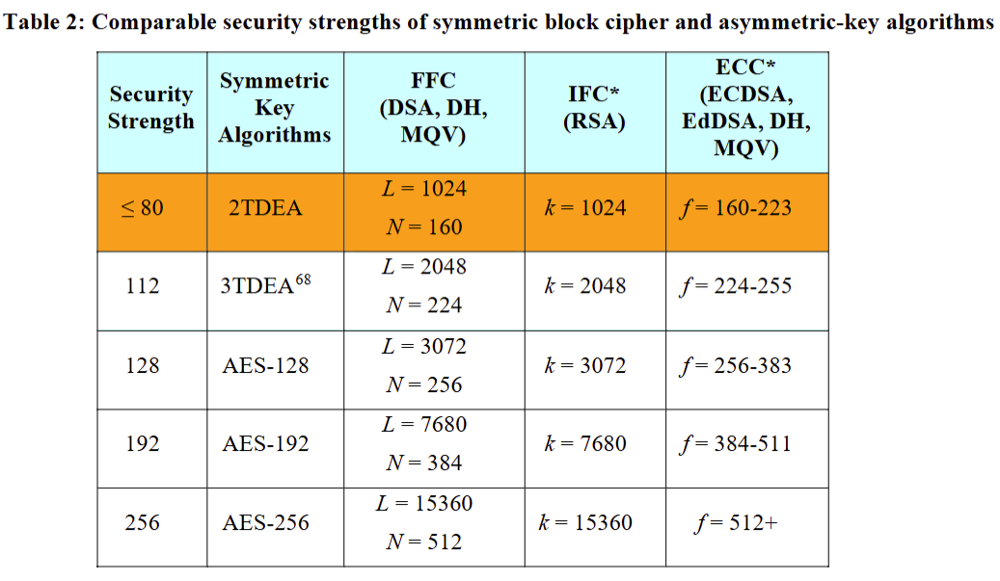
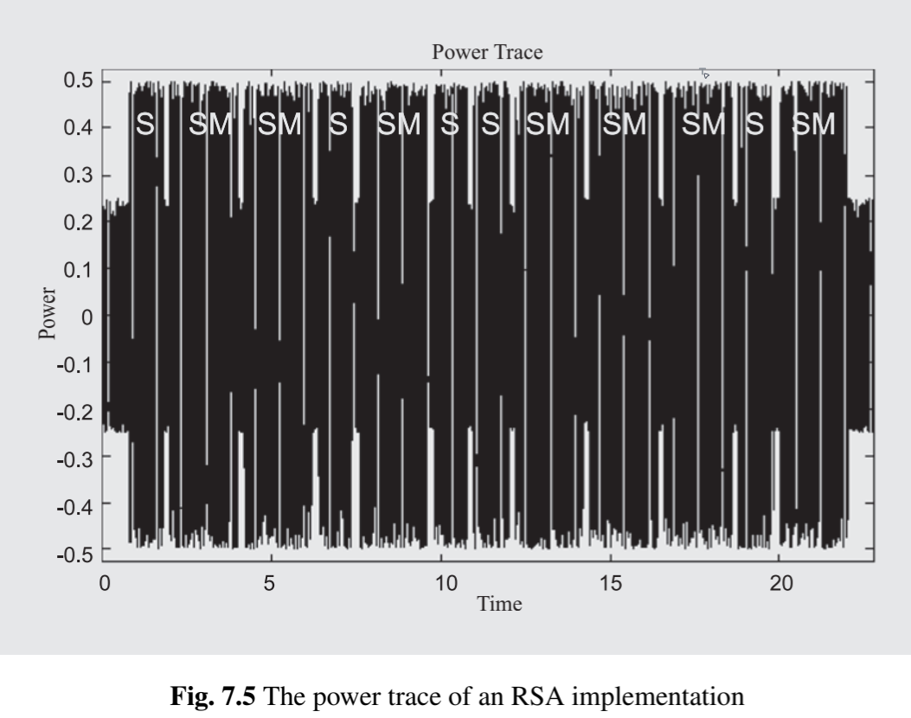

Cryptography 2026 Assignment#
name:葉品辰
ID:r14229017
date: 2026.06.02 or 2026.06.16
Question 6.4.#
In public-key cryptography, the desired security level directly influences the performance of the respective algorithm (cf. Section 6.2.4). We now analyze the relationship between security levels(安全級別) and run time(執行時間).
Assume that a web server for an online shop can use either RSA or ECC for signature generation. Furthermore, assume that signature generation for RSA-1024 and ECC-160 takes \(15.7\text{ ms}\) and \(1.3\text{ ms}\), respectively.
Determine the increase in run time for signature generation if the security level for RSA is increased from \(1024\) bits to \(3072\) bits.
How does the run time of RSA increase from \(1024\) bits to \(15,360\) bits?
Determine these numbers for the respective security levels of ECC.
Describe the difference between RSA and ECC when increasing the security level.
Question 6.4. - Answer#
假設與已知 (Assumptions & Preliminaries)#
【已知 1】 RSA和ECC的金鑰長度的計算複雜度估計：
\[ T \sim O(k^3) \]\(T\) : 計算時間複雜度 (Computational time complexity)
\(O(k^3)\) : 大 \(O\) 符號 (Big O notation)，表示演算法執行時間隨輸入規模增長的漸近上界
\(k\) : 金鑰長度位元數 (Key length in bits)
【已知 2】 NIST 安全級別對照表：

基礎級別（80-bit 系統安全）：RSA-1024 \(\cong\) ECC-160
中階級別（128-bit 系統安全）：RSA-3072 \(\cong\) ECC-256
高階級別（256-bit 系統安全）：RSA-15360 \(\cong\) ECC-512
開算#
1. 估計 \(t_{\text{RSA-3072}}\)#
2. 估計 \(t_{\text{RSA-15360}}\)#
3. 估計與RAS-3072、RSA-15360同等安全防禦等級的ECC用時 \(t_{\text{ECC}}\)#
RSA-3072 \(\overset{\text{已知 2}}{\cong}\) ECC-256
RSA-15360 \(\overset{\text{已知 2}}{\cong}\) ECC-512
4. 簡述RSA和ECC在安全級別和運算時間的關係#
當安全級別（Security Level）提升時 ，RSA 為了維持同等防禦力，其金鑰長度必須大幅度增長導致其基於 \(O(k^3)\) 複雜度的簽章運算時間急遽上升（例如從毫秒級暴增至數十秒），會對系統效能造成嚴重的效能瓶頸。而 ECC 得益於其底層數學結構（橢圓曲線離散對數問題）的優勢，金鑰長度只需平緩增長即可提供極高的安全防護，這使得 ECC 在高安全級別的需求下依然能保持極短的金鑰長度與極快的運算時間（維持在數十毫秒內）對系統效能的衝擊極小，遠比 RSA 更適合現代高效能系統。
系統安全級別 (防禦力) |
RSA 金鑰長度 |
RSA 執行時間 |
ECC 金鑰長度 |
ECC 執行時間 |
|---|---|---|---|---|
基礎 (80-bit) |
1024 \(\text{ bits}\) |
15.7 \(\text{ ms}\) |
160 \(\text{ bits}\) |
1.3 \(\text{ ms}\) |
中階 (128-bit) |
3072 \(\text{ bits}\) |
424 \(\text{ ms}\) |
256 \(\text{ bits}\) |
5.3 \(\text{ ms}\) |
高階 (256-bit) |
15360 \(\text{ bits}\) |
52988 \(\text{ ms}\) |
512 \(\text{ bits}\) |
42.6 \(\text{ ms}\) |
Question 6.10.#
Compute the inverse \(a^{-1} \bmod n\) with Fermat’s Theorem (if applicable) or Euler’s Theorem:
\(a = 4, n = 7\)
\(a = 5, n = 12\)
\(a = 6, n = 13\)
Question 6.10. - Answer#
假設與已知 (Assumptions & Preliminaries)#
【已知 1】 尤拉定理（Euler’s Theorem）： 如果 \(a\) 和 \(n\) 互質（最大公因數 \(\gcd(a,n)=1\)）
\[a^{\phi(n)} \equiv 1 \pmod n\]\(\phi(n)\) : 尤拉總計函數 (Euler’s totient function)，代表從 1 到 \(n-1\) 中，有多少個整數與 \(n\) 互質
【已知 2】 費馬小定理（Fermat’s Little Theorem）： 如果 \(a\) 不能被 \(p\) 整除，即 \(a \not{\equiv } 0 \bmod{\ p}\) 或 \(\gcd(a, p) = 1\)
\[a^{p-1} \equiv 1 \pmod p\]\(p\) : 質數模數 (Prime modulus)
\(a\) : 任意整數基數 (Base integer)
【推導 1】 尤拉定理找反元素：
\[\begin{split}\begin{gather*} a^{\phi(n)} &\overset{\text{已知 1}}{\equiv}& 1 \pmod p \\ a \cdot a^{\phi(n)-1} &\equiv& 1 \pmod p \\ a^{-1} \cdot a \cdot a^{\phi(n)-1} &\equiv& a^{-1} \cdot 1 \pmod p \\ a^{\phi(n)-1} &\equiv& a^{-1} \pmod p \\ \end{gather*}\end{split}\]\(\phi(n)\) : 尤拉總計函數 (Euler’s totient function)，代表從 1 到 \(n-1\) 中，有多少個整數與 \(n\) 互質
【推導 2】 費馬小定理找反元素：
\[\begin{split}\begin{gather*} a^{p-1} &\overset{\text{已知 2}}{\equiv}& 1 \pmod p \\ a \cdot a^{p-2} &\equiv& 1 \pmod p \\ a^{-1} \cdot a \cdot a^{p-2} &\equiv& a^{-1} \cdot 1 \pmod p \\ a^{p-2} &\equiv& a^{-1} \pmod p \\ \end{gather*}\end{split}\]\(p\) : 質數模數 (Prime modulus)
\(a\) : 任意整數基數 (Base integer)
【已知 3】 尤拉總計函數參考值 \(\phi(n)\) ：
十位數 \ 個位
0
1
2
3
4
5
6
7
8
9
0+
—
1
1
2
2
4
2
6
4
6
10+
4
10
4
12
6
8
8
16
6
18
20+
8
12
10
22
8
20
12
18
12
28
30+
8
30
16
20
16
24
12
36
18
24
40+
16
40
12
42
20
24
22
46
16
42
50+
20
32
24
52
18
40
24
36
28
58
60+
16
60
30
36
32
48
20
66
32
44
70+
24
70
24
72
36
40
36
60
24
78
80+
32
54
40
82
24
64
42
56
40
88
90+
24
72
44
60
46
72
32
96
42
60
\(\phi(n)\) : 尤拉總計函數 (Euler’s totient function)，代表從 1 到 \(n-1\) 中，有多少個整數與 \(n\) 互質
開算#
1. \(a = 4, n = 7\)#
驗算 \(4 \times 2 = 8 \equiv 1 \pmod 7\)
2. \(a = 5, n = 12\)#
驗算 \(5 \times 5 = 25 \equiv 1 \pmod {12}\)
3. \(a = 6, n = 13\)#
驗算 \(6 \times 11 = 66 \equiv 1 \pmod {13}\)
Question 7.12.#
We now show how an attack with chosen ciphertext can be used to break an RSA encryption.
Show that the multiplicative property holds for RSA, i.e., show that the product of two ciphertexts \(y_1\) and \(y_2\) is equal to the encryption of the product of the two respective plaintexts \(x_1\) and \(x_2\).
Under certain circumstances, this property might be exploited by an attacker.
Assume Oscar eavesdrops and obtains a ciphertext \(y_1\), which is the encrypted version of a message \(x_1\) that was sent from Alice to Bob. Oscar would like to know the plaintext \(x_1\).
Oscar computes an innocent looking message \(t\), which he encrypts. We assume that he can obtain the decryption of one ciphertext that he sends to Bob, e.g., by having access to Bob’s computer at a certain point in time. Show how Oscar can construct a ciphertext \(y\) in such a way that he can use its decryption for computing \(x_1\).
(吐槽：Oscar在有 \(y_1\) 想要得到 \(x_1\) 且 可以獲得一次Bob的計算機一個密文的解密結果 的情況下，Oscar直接丟\(y_1\)給Bob的計算機不就算出 \(x_1\) ㄌㄇ :3 )
Question 7.12. - Answer#
假設與已知 (Assumptions & Preliminaries)#
【已知 1】 RSA 加密演算法 ：
明文 \(x_{1}\) 對應 密文 \(y_{1}\)
\[y_{1}\equiv x_{1}^{e} \pmod n\]明文 \(x_{2}\) 對應 密文 \(y_{2}\)
\[y_{2}\equiv x_{2}^{e} \pmod n\]明文 \(x_{1} \cdot x_{2}\) 對應 密文 \(y_{1,2}\)
\[y_{1,2}\equiv \left( x_{1} \cdot x_{2} \right)^{e} \pmod n\]\((e, n)\) : RSA 公鑰對 (RSA public key pair)
\(e\) : 加密指數 (Encryption exponent)
\(n\) : RSA 模數 (RSA modulus)
\(x_{1}, x_{2}\) : 兩個不同的明文訊息 (Two distinct plaintext messages)
\(y_{1}, y_{2}\) : 對應上述明文的獨立密文 (Corresponding ciphertexts)
\(y_{1,2}\) : 兩密文直接相乘所得的複合密文 (Combined ciphertext)
開證#
1. proof#
2. 基於 RSA 的攻擊邏輯步驟#
Oscar 的目標是求出 $x_{1}$，但若直接把 $y_{1}$ 丟給 Bob 解密，Bob 會拒絕
Oscar 攔截密文 \(y_{1}\)
Oscar 攔截到 Alice 傳給 Bob 的密文 \(y_{1}\)
此時Oscar知道： 公鑰 \((e, n)\)、密文 \(y_{1}\)
Oscar 構造偽裝密文 \(y\)
Oscar 任意選擇一個看起來無害的隨機明文 \(t\)（滿足 \(\gcd(t, n) = 1\)），並用 Bob 的公鑰對其加密，得到密文 \(y_{t}\)：
\[y_{t}\equiv t^{e} \pmod n\]接著，Oscar 利用第 1 小題的乘法性質，將攔截到的 \(y_{1}\) 與自己生成的 \(y_{t}\) 相乘，構造出一個全新的密文 \(y\)：
\[\begin{split}\begin{gather*} y&\equiv& y_{1}\cdot y_{t} \pmod n \\ &\equiv& y_{1}\cdot t^{e} \pmod n \end{gather*}\end{split}\]欺騙 Bob 進行解密：
Oscar 將這個構造出來的密文 \(y\) 送給 Bob，並假裝這是一個正常的訊息請 Bob 解密。Bob 使用他的私鑰 \(d\) 對 \(y\) 進行解密，得到對應的明文 \(x\)：
\[x\equiv y^{d} \pmod n\]因為 \(y \equiv (x_1 \cdot t)^e \pmod n\)，所以解密出來的結果必然是：
\[x\equiv x_{1}\cdot t \pmod n \](此時 Bob 只會看到一串無意義的隨機數字 $x$，以為解密失敗或只是垃圾訊息，於是將 $x$ 回傳給 Oscar)此時Oscar知道： 公鑰 \((e, n)\)、密文 \(y_{1}\)、由明文 \(x_1\) 和Oscar給的隨機數 \(t\) 所相乘的 \(x\)
還原原始明文 \(x_{1}\)：
Oscar 拿到 Bob 吐回來的解密結果 \(x\) 後，因為他自己知道當初選用的隨機數 \(t\)，所以他可以輕易計算出 \(t\) 在模 \(n\) 下的反元素 \(t^{-1}\)：
\[t\cdot t^{-1}\equiv 1 \pmod n\]最後，Oscar 將 \(x\) 乘以 \(t^{-1}\)，即可神不知鬼不覺地還原出 Alice 的機密明文 \(x_{1}\)：
\[\begin{split}\begin{gather*} x\cdot t^{-1}&\equiv& (x_{1}\cdot t)\cdot t^{-1} \pmod n\\ &\equiv& x_{1} \pmod n \end{gather*}\end{split}\]
現行RSA的防禦手段#
現行RSA可以可以確認對方是否知道明文，若不曉得則拒絕回傳來達到保護的目的，具體來說。
Alice 知道明文 \(x_1\) 所以可以計算出 \(\text{hash}(x_1)\) 。當Bob收到密文 \(y_1\) 並解出 \(x_1\) 後先計算 \(\text{hash}(x_1)\) 看與Alice一起給的 \(\text{hash}(x_1)\) 是否相同
Oscar 不知道明文 \(x_1\) 所以不能計算出 \(\text{hash}(x_1 \cdot t)\) 。當Bob收到密文 \(y\) 並解出 \(x\) (也就是 \(x_1 \cdot t\)) 後先計算 \(\text{hash}(x)\) ，預期Oscar應給出 \(\text{hash}(x)\) ，但發現與Oscar一起給的 \(\text{hash}(x_1)\) 不一致，所以認為Oscar應該不知道全部的明文而拒絕回傳相關資訊
Question 7.16.#
Let us now investigate side-channel attacks(側通道攻擊) against RSA. In a simple implementation of RSA without any countermeasures against side-channel leakage, the analysis of the current consumption of the microcontroller in the decryption part directly yields the private exponent.

Figure 7.5 in Section 7.9 shows the power consumption of an implementation of the square-and-multiply algorithm(平方乘演算法). If the microcontroller computes a squaring or a multiplication, the power consumption increases. Due to the small intervals between the loops, every iteration can be identified. Furthermore, for each round we can identify whether a single squaring (short duration) or a squaring followed by a multiplication (long duration) is being computed.
Assume the square-and-multiply algorithm has been implemented such that the exponent is being scanned from left to right. Furthermore, assume that the starting values have been initialized. What is the private exponent \(d\)?
This key belongs to the RSA setup with the primes \(p = 67\) and \(q = 103\) and \(e = 257\). Verify your result. (Note that in practice an attacker wouldn’t know the values of \(p\) and \(q\).)
Question 7.16. - Answer#
假設與已知 (Assumptions & Preliminaries)#
【已知 1】 RSA 模反元素計算尤拉函數 \(\phi(n)\) ：
\[\begin{split}\begin{gather*} \phi(n) &=& (p-1)(q-1) \\ &\overset{\text{Q7.16.2}}{=}& (67-1)(103-1) \\ &=& 66 \times 102 \\ &=& 6732 \end{gather*}\end{split}\]\(\phi(n)\) : 尤拉總計函數值 (Euler’s totient function value)
\(n\) : RSA 模數 (RSA modulus)，滿足 \(n = p \times q \overset{\text{Q7.16.2}}{=} 67 \times 103 = 6901\)
\(p\) : 第一個獨立質數 (First prime number) \(p \overset{\text{Q7.16.2}}{=} 67\)
\(q\) : 第二個獨立質數 (Second prime number) \(q \overset{\text{Q7.16.2}}{=} 103\)
\((p-1)(q-1)\) : 當 \(n\) 為兩個相異質數之積時，其尤拉函數的乘法性質展開式
【已知 2】 擴展歐幾里得演算法-輾轉相除法求最大公因數 ：
\[257 \cdot d \equiv 1 \pmod{6732}\]\(6732 = 26 \times 257 + 50\)
\(257 = 5 \times 50 + 7\)
\(50 = 7 \times 7 + 1\)
\[\begin{split}\begin{gather*} 1 &=& 50 - 7 \times 7 \\ &=& 50 - 7 \times (257 - 5 \times 50) \\ &=& 36 \times 50 - 7 \times 257\\ &=& 36 \times (6732 - 26 \times 257) - 7 \times 257\\ &=& 36 \times 6732 - 936 \times 257 - 7 \times 257\\ &=& 36 \times 6732 - 943 \times 257\\ \end{gather*}\end{split}\]
1. solve \(d\)#
2. 知道所有參數去計算 \(d\) 驗證與旁通通道攻擊得到的 \(d\) 是否相同#
與旁通道攻擊得到的 \(d\) 一模一樣，這告訴我們現代的密碼學實作一定要加入隨機延遲或是「Dummy Operations（即使是 0 也假裝做一下乘法）」來混淆視聽， 否則數學再安全硬體也會把你出賣
Question 8.8.#
Given is a Diffie-Hellman Key Exchange（迪菲-赫爾曼金鑰交換, DHKE） algorithm. The modulus \(p\) has \(1024\) bits and \(\alpha\) is a generator of a subgroup where \(\text{ord}(\alpha) \approx 2^{160}\).
What is the maximum value that the private keys should have?
How long does the computation of the session key take on average if one modular multiplication takes \(700\ \mu\text{s}\) and one modular squaring \(400\ \mu\text{s}\)? Assume that the public keys have already been computed.
One well-known acceleration technique for discrete logarithm systems uses short primitive elements. We assume now that \(\alpha\) is such a short element (e.g., a \(16\text{-bit}\) integer). Assume that modular multiplication with \(\alpha\) takes now only \(30\ \mu\text{s}\). How long does the computation of the public key take now? Why is the time for one modular squaring still the same as above if we apply the square-and-multiply algorithm?
Question 8.8. - Answer#
假設與已知 (Assumptions & Preliminaries)#
【假設 1】 密鑰是隨機生成的 ： 長度為 \(160 \text{ bits}\) 的密鑰 \(0,1\) 應該是一樣多的
模平方次數：無論位元是 \(0\) 還是 \(1\)，每前進一個位元都必須執行一次平方:總共需要 \(160\) 次平方
\[\text{平方次數} = 160 \]模乘次數：只有當位元為 \(1\) 時才需要執行乘法。在隨機金鑰的假設下，每個位元為 \(1\) 的機率平均為 \(0.5\):總共需要 \(800\) 次平方
\[\begin{split}\begin{gather*} \text{乘法次數} &=& 160 \times 0.5 \\ &=&80\\ \end{gather*}\end{split}\]\(N_{\text{square}}\) : 總共所需的模平方運算次數 (Total number of modular squarings) [次]
\(N_{\text{mult}}\) : 平均所需的模乘法運算次數 (Average number of modular multiplications) [次]
\(160\) : 金鑰的位元長度 (Key length in bits) [無單位]
\(0.5\) : 隨機金鑰中位元為 \(1\) 的期望機率 (Expected probability of bit 1) [無單位]
1. 私鑰 \(a\) 應該擁有的最大值是多少？#
在迪菲-赫爾曼金鑰交換（DHKE）中，公鑰是由 \(A = \alpha^a \bmod{\ p}\) 計算而來
\(a\) 是私鑰
\(\alpha \) 是子群的生成元（Generator）
根據群論的週期性，當次方 \(a\) 超過該子群的階數 \(\text{ord}(\alpha)\) 時，計算出來的結果就會開始重複循環，因此讓私鑰大於子群的階數並不會增加任何密碼學上的安全性，只會浪費計算資源。
2. 計算「對話金鑰（Session Key）」平均需要多少時間#
3. 比較 平方運算 和 乘法運算 在使用小 \(\alpha\) 的加速#
平方運算
\(16 \text{ bits} \rightarrow 32 \text{ bits}\rightarrow 64 \text{ bits}\rightarrow 128\text{ bits} \rightarrow 256\text{ bits} \rightarrow 512\text{ bits} \rightarrow 1024\text{ bits}\)
大約只要經過 \(6\) 到 \(7\) 輪的平方運算後就是 \(1024\text{ bits} \times 1024\text{ bits}\) 的運算，時間仍卡會在 \(400\ \mu\text{s}\)
乘法運算
無論何時運算都是 \(1024\text{ bits} \times 16\text{ bits}\) 的運算，時間可以大幅下降 \(30\ \mu\text{s}\)
Question 8.16.#
Given are an Elgamal encryption scheme with public parameters \(k_{\text{pub}} = (p, \alpha, \beta)\) and an unknown private key \(k_{\text{pr}} = d\). Due to an erroneous implementation of the random number generator（隨機數產生器,RNG） of the encrypting party, the following relation holds for two temporary keys:
Given are \(n\) consecutive ciphertexts
belonging to the plaintexts
Furthermore, the first plaintext \(x_1\) is known (e.g., header information).
Describe how an attacker can compute the plaintexts \(x_1, x_2, \dots, x_n\) from the given variables.
Can an attacker compute the private key \(d\) from the given information? Explain your answer.
Question 8.16. - Answer#
假設與已知 (Assumptions & Preliminaries)#
【已知 1】 ElGamal 的加密-Bob視角 ： 根據公鑰 \(k_{\text{pub}} = (p, \alpha, \beta)\) 生成私鑰 \(k_{\text{pr}} = d\)
\[\beta \equiv \alpha ^{d} \pmod p\]\(k_{\text{pub}}\) : Bob 的公開金鑰三元組 (Bob’s public key triplet) \(k_{\text{pub}} = (p, \alpha, \beta)\) [無單位]
\(k_{\text{pr}}\) : Bob 的私密金鑰 (Bob’s private key) \(k_{\text{pr}} = d\) [無單位]，滿足 \(1 < d < p-1\)
\(p\) : 系統大質數模數 (Large prime modulus) [無單位]
\(\alpha \) : 有限體 \(\mathbb{F}_{p}^{*}\) 的生成元／本原根 (Generator / Primitive root) [無單位]
\(\beta \) : 公開的金鑰元素 (Public key component) [無單位]
【已知 2】 ElGamal 的加密-Alice視角 ：
(a) 利用 Bob 公布的公鑰 \(k_{\text{pub}} = (p, \alpha, \beta)\) 和自己選的隨機數 \(i\) 生成鎖頭 \(k_E\) 和隱形鑰水 \(k_M\)
\[k_E = \alpha^i \bmod{\ p}\]\[k_M = \beta^i \bmod{\ p}\](b) 將明文 \(x\) 抹上隱形鑰水 \(k_M\) 變成密文 \(y\) ，並向 Bob 傳送包裹 \((k_E, y)\)
\[ y = x \cdot k_M \bmod{\ p} \]\(i\) : Alice 的臨時隨機數／暫時私鑰 (Ephemeral key / Random integer) [無單位]，滿足 \(\gcd(i, p-1) = 1\)
\(k_{E}\) : 傳輸包裹中的鎖頭／暫時公鑰 (Ephemeral public key) [無單位]
\(k_{M}\) : 用於遮蔽明文的隱形密鑰／共享秘密 (Shared secret key mask) [無單位]
\(x\) : Alice 欲傳送的原始明文訊息 (Plaintext message) [無單位]，滿足 \(0 \le x < p\)
\(y\) : 掩蔽後的密文訊息 (Ciphertext message component) [無單位]
【已知 3】 ElGamal 的解密-Bob視角 ：
(a) 收到包裹 \((k_E, y)\) 算出隱形鑰水 \(k_M\)
\[\begin{split}\begin{gather*} (k_{E})^{d}\mod p &=& (\alpha ^{i})^{d}\mod p\\ &=&\beta ^{i}\mod p \\ &=&k_{M} \end{gather*}\end{split}\](b) 包裹中的 \(y\) 除以算出的隱形鑰水 \(k_M\) 就可以得到明文 \(x\)
\[\begin{split}\begin{gather*} y k_M^{-1} \mod p &\overset{\text{已知 2(b)}}{=}& \left( x \cdot k_M \right) k_M^{-1} \mod p\\ &=&x\mod p \\ \end{gather*}\end{split}\]\(k_{E}\) : 傳輸包裹中的鎖頭／暫時公鑰 (Ephemeral public key) [無單位]
\(k_{M}\) : 用於遮蔽明文的隱形密鑰／共享秘密 (Shared secret key mask) [無單位]
\(x\) : Alice 欲傳送的原始明文訊息 (Plaintext message) [無單位]，滿足 \(0 \le x < p\)
\(y\) : 掩蔽後的密文訊息 (Ciphertext message component) [無單位]
\(k_{M}^{-1}\) : 隱形密鑰 \(k_{M}\) 在模數 \(p\) 下的模反元素 (Modular multiplicative inverse) [無單位]
【假設 1】 已知明文攻擊情境（Known-Plaintext Attack Scenario） ： 假設系統傳輸的第一組明文訊息 \(x_{1}\) 被駭客透過外部管道得知。
\[ x_{1} \in \text{公共訊息} \]【假設 2】 隨機數產生器失效故障 ： 系統工程師實作隨機數機制時發生錯誤，導致相鄰兩次加密（第 \(j\) 次與第 \(j+1\) 次）所生成的隱形密鑰遮罩呈現確定性的平方遞迴關係。
\[k_{M, j+1} \equiv k_{M, j}^2 \pmod p\]
1. 駭客的攻擊方式#
駭客知道的變數:
【已知 1】： Bob的公鑰 \(k_{\text{pub}} = (p, \alpha, \beta)\)
【已知 2(b)】： Alice給Bob的包裹 \((k_E, y)\)
【假設 1】： Alice給Bob的第一段明文 \(x_{1}\)
駭客想要知道的變數:
\(x_1, x_2, \dots, x_n\)
駭客攻擊步驟1: 算出所有隱形鑰水 \(k_{M,1},k_{M,2},\dots, k_{M,n}\)
駭客攻擊步驟2: 利用隱形鑰水組 \(k_{M,1},k_{M,2},\dots, k_{M,n}\) 和對應的包裹組 \((k_E, y)_1,(k_E, y)_2,\dots,(k_E, y)_n\) 取得明文組 \(x_1, x_2, \dots, x_n\)
2. 駭客仍拿不到密鑰 \(d\)#
駭客可以取得明文組 \(x_1, x_2, \dots, x_n\) 的問題出在Alice的RNG(假設2)，知曉隱形鑰水組 \(k_{M,1},k_{M,2},\dots, k_{M,n}\) 的 Alice 也不能推算出 Bob 的密鑰 \(d\)
任何知道以下變數想推得Bob的密鑰 \(d\) 都要解離散對數的難題（Discrete Logarithm Problem, DLP） :
【已知 1】： Bob的公鑰 \(k_{\text{pub}} = (p, \alpha, \beta)\)
【已知 2(b)】： Alice給Bob的包裹 \((k_E, y)\)
【假設 1】： Alice給Bob的第一段明文 \(x_{1}\)
【Q8.16.1】： 隱形鑰水組 \(k_{M,1},k_{M,2},\dots, k_{M,n}\)
Question 9.12.#
Given is the same curve as in Problem 9.11 (\(E : y^2 \equiv x^3 + 4x + 20 \pmod{29}\) with \(P = (8,10)\)). The order of this curve is known to be \(\#E = 37\). Given is also the point \(Q = 15 \cdot P = (14,23)\) on the curve. Determine the result of the following point multiplications by using as few group operations as possible, i.e., make smart use of the known point \(Q\). Specify how you simplified the calculation each time.
(Hint: In addition to using \(Q\), use the fact that it is easy to compute \(-P\).)
\(16 \cdot P\)
\(38 \cdot P\)
\(53 \cdot P\)
\(14 \cdot P + 4 \cdot Q\)
\(23 \cdot P + 11 \cdot Q\)
Question 9.12. - Answer#
假設與已知 (Assumptions & Preliminaries)#
【已知 1】 ECC加法、2倍運算 ： 對於標準橢圓曲線方程 \(E : y^2 \equiv x^3 + ax + b \pmod{p}\) 計算 \((x_1,y_1)+(x_2,y_2)=(x_3,y_3)\)
(a) 計算斜率
\[\begin{split}s = \begin{cases} \frac{y_2 - y_1}{x_2 - x_1} \bmod{\ p} & \text{(addition)} \\[10pt] \frac{3x_1^2 + a}{2y_1} \bmod{\ p} & \text{(doubling)} \end{cases}\end{split}\](b) 計算座標
\[\begin{split}\begin{gather*} x_3 &=& s^2 - x_1 - x_2 \bmod{\ p} \\ y_3 &=& s(x_1 - x_3) - y_1 \bmod{\ p} \end{gather*}\end{split}\]\((x_1, y_1)\) : 第一個點 \(P\) 的座標 [無單位]
\((x_2, y_2)\) : 第二個點 \(Q\) 的座標 [無單位]；在點倍加（Doubling）時，滿足 \(x_2 = x_1\) 且 \(y_2 = y_1\)
\((x_3, y_3)\) : 運算結果點 \(R\) 的座標 [無單位]
\(a\) : 橢圓曲線方程的 \(x\) 項係數常數 (Elliptic curve parameter \(a\)) [無單位]
\(s\) : 直線的割線斜率或切線斜率 (Secant or tangent slope) [無單位]
\(p\) : 有限體的質數模數 (Prime modulus of finite field \(\mathbb{F}_{p}\)) [無單位]
特殊限制 : 若點加法時 \(x_1 = x_2\) 且 \(y_1 \neq y_2\)，或點倍加時 \(y_1 = 0\)，則相加結果為無窮遠點（Point at Infinity, \(\mathcal{O}\)）
【推導 1】 ECC加法、2倍-實際運算1 ： \((14,23) + (8,10)\)
(a) 計算斜率
\[\begin{split}\begin{gather*} s &\overset{\text{已知 1(a)}}{=}& \frac{y_2 - y_1}{x_2 - x_1} &\bmod{\ p} \\ &\overset{\text{Q9.12}}{=}& \frac{y_2 - y_1}{x_2 - x_1} &\bmod{\ 17} \\ &\overset{\text{推導 1-title}}{=}& \frac{10 - 23}{8 - 14} &\bmod{\ 17} \\ &=& \frac{-13}{-6} &\bmod 29 \\ &=& \frac{13}{6} &\bmod 29 \\ &=& 13 \cdot 6^{-1} &\bmod 29 \\ &\overset{6\cdot 5 = 30 \equiv 1 \pmod {29} }{=}& 13 \cdot 5 &\bmod 29 \\ &=& 65 &\bmod 29 \\ &=& 7 &\bmod 29 \\ \end{gather*}\end{split}\](b) 計算 \(x_3\)
\[\begin{split}\begin{gather*} x_3 &\overset{\text{已知 1(b)}}{=}& s^2 - x_1 - x_2 &\bmod{\ p} \\ &\overset{\text{Q9.12}}{=}& s^2 - x_1 - x_2 &\bmod 29 \\ &\overset{\text{推導 1-title}}{=}& s^2 - 14 - 8 &\bmod 29 \\ &\overset{\text{推導 1(a)}}{=}& 7^2 - 14 - 8 &\bmod 29 \\ &=& 27 &\bmod 29 \\ \end{gather*}\end{split}\](c) 計算 \(y_3\)
\[\begin{split}\begin{gather*} y_3 &\overset{\text{已知 1(b)}}{=}& s(x_1 - x_3) - y_1 &\bmod{\ p} \\ &\overset{\text{Q9.12}}{=}& s(x_1 - x_3) - y_1 &\bmod 29 \\ &\overset{\text{推導 1-title}}{=}& s(14 - x_3) - 23 &\bmod 29 \\ &\overset{\text{推導 1(a)}}{=}& 7(14 - x_3) - 23 &\bmod 29 \\ &\overset{\text{推導 1(b)}}{=}& 7(14 - 27) - 23 &\bmod 29 \\ &=& -114 &\bmod 29 \\ &=& 2 &\bmod 29 \\ \end{gather*}\end{split}\]【已知 2】 有限群的週期性（階數） ： 階數 \(\#E = 37\) 的循環群，超過 \(37\) 的倍數，通通可以直接減掉 \(37\)
\[\begin{split}\begin{gather*} 37 \cdot P &=& \mathcal{O} \\ 37n \cdot P &=& \mathcal{O} &\ , n \in \mathbb{Z} \\ \end{gather*}\end{split}\]【推導 2】 ECC加法、2倍-實際運算2 ： \((8,10) + (8,10)\)
(a) 計算斜率
\[\begin{split}\begin{gather*} s &\overset{\text{已知 1(a)}}{=}& \frac{3x_1^2 + a}{2y_1} &\bmod{\ p} \\ &\overset{\text{Q9.12}}{=}& \frac{3x_1^2 + 4}{2y_1} &\bmod 29 \\ &\overset{\text{推導 2-title}}{=}& \frac{3\cdot 8^2 + 4}{2 \cdot 10} &\bmod 29 \\ &=& \frac{196}{20} &\bmod 29 \\ &=& \frac{22}{20} &\bmod 29 \\ &=& 22 \cdot 20^{-1} &\bmod 29 \\ &\overset{20\cdot 16 = 320 \equiv 1 \pmod {29} }{=}& 22 \cdot 16 &\bmod 29 \\ &=& 352 &\bmod 29 \\ &=& 4 &\bmod 29 \\ \end{gather*}\end{split}\](b) 計算 \(x_3\)
\[\begin{split}\begin{gather*} x_3 &\overset{\text{已知 1(b)}}{=}& s^2 - x_1 - x_2 &\bmod{\ p} \\ &\overset{\text{Q9.12}}{=}& s^2 - x_1 - x_2 &\bmod 29 \\ &\overset{\text{推導 2-title}}{=}& s^2 - 8 - 8 &\bmod 29 \\ &\overset{\text{推導 2(a)}}{=}& 4^2 - 8 - 8 &\bmod 29 \\ &=& 0 &\bmod 29 \\ \end{gather*}\end{split}\](c) 計算 \(y_3\)
\[\begin{split}\begin{gather*} y_3 &\overset{\text{已知 1(b)}}{=}& s(x_1 - x_3) - y_1 &\bmod{\ p} \\ &\overset{\text{Q9.12}}{=}& s(x_1 - x_3) - y_1 &\bmod 29 \\ &\overset{\text{推導 2-title}}{=}& s(8 - x_3) - 10 &\bmod 29 \\ &\overset{\text{推導 2(a)}}{=}& 4(8 - x_3) - 10 &\bmod 29 \\ &\overset{\text{推導 2(b)}}{=}& 4(8 - 0) - 10 &\bmod 29 \\ &=& 22 &\bmod 29 \\ \end{gather*}\end{split}\]【推導 3】 ECC加法、2倍-實際運算3 ： \((0,22) + (8,10)\)
(a) 計算斜率
\[\begin{split}\begin{gather*} s &\overset{\text{已知 1(a)}}{=}& \frac{y_2 - y_1}{x_2 - x_1} &\bmod{\ p} \\ &\overset{\text{Q9.12}}{=}& \frac{y_2 - y_1}{x_2 - x_1} &\bmod 29 \\ &\overset{\text{推導 3-title}}{=}& \frac{10 - 22}{8 - 0} &\bmod 29 \\ &=& \frac{-12}{8} &\bmod 29 \\ &=& \frac{17}{8} &\bmod 29 \\ &=& 17 \cdot 8^{-1} &\bmod 29 \\ &\overset{8\cdot 11 = 88 \equiv 1 \pmod {29} }{=}& 17 \cdot 11 &\bmod 29 \\ &=& 187 &\bmod 29 \\ &=& 13 &\bmod 29 \\ \end{gather*}\end{split}\](b) 計算 \(x_3\)
\[\begin{split}\begin{gather*} x_3 &\overset{\text{已知 1(b)}}{=}& s^2 - x_1 - x_2 &\bmod{\ p} \\ &\overset{\text{Q9.12}}{=}& s^2 - x_1 - x_2 &\bmod 29 \\ &\overset{\text{推導 2-title}}{=}& s^2 - 0 - 8 &\bmod 29 \\ &\overset{\text{推導 2(a)}}{=}& 13^2 - 0 - 8 &\bmod 29 \\ &=& 161 &\bmod 29 \\ &=& 16 &\bmod 29 \\ \end{gather*}\end{split}\](c) 計算 \(y_3\)
\[\begin{split}\begin{gather*} y_3 &\overset{\text{已知 1(b)}}{=}& s(x_1 - x_3) - y_1 &\bmod{\ p} \\ &\overset{\text{Q9.12}}{=}& s(x_1 - x_3) - y_1 &\bmod 29 \\ &\overset{\text{推導 2-title}}{=}& s(0 - x_3) - 22 &\bmod 29 \\ &\overset{\text{推導 2(a)}}{=}& 13(0 - x_3) - 22 &\bmod 29 \\ &\overset{\text{推導 2(b)}}{=}& 13(0 - 16) - 22 &\bmod 29 \\ &=& -230 &\bmod 29 \\ &=& 2 &\bmod 29 \\ \end{gather*}\end{split}\]
開算#
1. \(16 \cdot P\)#
2. \(38 \cdot P\)#
3. \(53 \cdot P\)#
4. \(14 \cdot P + 4 \cdot Q\)#
5. \(23 \cdot P + 11 \cdot Q\)#
Question 9.16.#
Derive the formula for point addition on elliptic curves \(E:y^{2}=x^{3}+ax+b\mathinner{\;\left(\mod \,p\right)}\) . That is, given the coordinates for \(P=(x_1,y_1)\) and \(Q=(x_2,y_2)\), find the coordinates for \(R = (x_3,y_3)\).
Hint: First, find the equation of a line through the two points. Insert this equation in the elliptic curve equation. At some point you have to find the roots of a cubic polynomial \(x^3 + a_2x^2 + a_1x + a_0\). If the three roots are denoted by \(x_0, x_1, x_2\), you can use the fact that \(x_0 + x_1 + x_2 = -a_2\).
Question 9.16. - Answer#
這題會有 Latex 超出pdf而看不到的問題，可以到這裡看到比較完整的回答
假設與已知 (Assumptions & Preliminaries)#
【已知 1】 ECC加法邏輯運算 ： 在有限體 \(\mathbb{F}_{p}\) 上的點加法（Point Addition）是兩點連線與曲線相交的第三點，關於 \(x\) 軸的對稱點即為相加之和
(a) 連線：在橢圓曲線上任取兩點 \(P\) 和 \(Q\)，作一條穿過這兩點的直線，其斜率 \(s\)
\[s =\frac{y_2 - y_1}{x_2 - x_1} \bmod{\ p} \](b) 相交：該直線會與橢圓曲線交於第三個點（假設為 \(R^{\prime }=(x_3,y_3')\)）
\[\begin{split}\begin{gather*} y'&=&s(x-x_{1})+y_{1} \\ y_3'&=&s(x_3-x_{1})+y_{1} \\ \end{gather*}\end{split}\](c) 對稱：將 \(R^{\prime }\) 以 \(x\) 軸為中心進行垂直翻轉（對稱點），得到的點就是相加的結果 \(R\)。
\[\begin{split}\begin{gather*} R'&=&(x_3,y_3') \\ R&=&(x_3,-y_3') \\ R&=&(x_3,y_3) \\ \end{gather*}\end{split}\]\(P, Q\) : 橢圓曲線上相加的兩個已知相異點 (Two distinct points on the elliptic curve)
\(R^{\prime }\) : 直線與曲線相交的第三點 (The third intersection point)
\(R\) : 點加法運算的最終和點 (The resultant sum point) \(R = P + Q\)
\(s\) : 穿過 \(P, Q\) 兩點的割線斜率 (Slope of the secant line) [無單位]
\(p\) : 有限體的質數模數 (Prime modulus of finite field \(\mathbb{F}_{p}\)) [無單位]
【已知 2】 韋達定理（Vieta’s formulas）與第三點 \(x\) 座標推導 ： 三次方程 \(x^3 + c_2 x^2 + c_1 x + c_0 = 0\) 的三個根之和等於 \(-c_{2}\)。這條直線與橢圓曲線相交於三點，其 \(x\) 座標分別為 \(x_{1}\)、\(x_{2}\) 和 \(x_{3}\)
\[\begin{split}\begin{gather*} &x^3 + c_2 x^2 + c_1 x + c_0 &=& 0 \\ \overset{\text{可拆解成}}{\Rightarrow}&(x-x_1)(x-x_2)(x-x_3) &=& 0 \\ &x^3-(x_1+x_2+x_3)x^2+(x_1x_2+x_1x_3+x_2x_3)x+x_1x_2x_3&=&0 \\ \overset{\text{觀察}x^2\text{項}}{\Rightarrow}&c_2&=& -(x_1+x_2+x_3)\\ &-c_2&=& x_1+x_2+x_3\\ \end{gather*}\end{split}\]\(a, b\) : 橢圓曲線的控制參數常數 (Elliptic curve parameters) [無單位]
\(c_{2}\) : 三次方程式的 \(x^{2}\) 項係數 (Coefficient of the \(x^{2}\) term)，此處 \(c_2 = -s^2\) [無單位]
\(x_1, x_2\) : 已知點 \(P\) 與 \(Q\) 的 \(x\) 軸座標 [無單位]
\(x_{3}\) : 計算出的和點 \(R\) 之 \(x\) 軸座標 [無單位]
開證#
(a) x_3#
(b) y_3#
Question 10.8.#
Given is an RSA signature scheme with EMSA-PSS(Encoding Method for Signature with Appendix - Probabilistic Signature Scheme) padding as shown in Section 10.2.3. Describe step-by-step the verification process that has to be performed by the receiver of a signature that was EMSA-PSS encoded.
Question 10.8. - Answer#
假設與已知 (Assumptions & Preliminaries)#
【已知 1】 RSA-PSS ： Probabilistic Signature Scheme
簽名方（Signer）會輸出：\( (x , s)\)
驗證方（Verifier）持有：\( (n, e)\)
\(x\) : 待驗證的原始訊息明文 (Original plaintext message)
\(s\) : 簽名方產生的數位簽章 (Digital signature)
\((n, e)\) : 簽名方的 RSA 公鑰對 (RSA public key pair)
【已知 2】 RSA 基礎解密 (RSA Primitive) ： 利用簽名方的公鑰 \((n, e)\) 對該簽名 \(s\) 驗章解出 \(m\)
\[m = s^e \bmod n\]\(s\) : 輸入的數位簽章整數值 (Signature integer value) \(0 \le s \le n-1\)
\(e\) : 簽名方的公開加密／驗章指數 (Public exponent) [無單位]
\(n\) : 簽名方的 RSA 模數 (RSA modulus) [無單位]
\(m\) : 解密還原出的代表整數 (Recovered message representative integer) [無單位]
【已知 3】 數值至位元組字串之轉換（I2OSP: Integer-to-Octet-String Primitive） ： 整數 \(m\)，轉換成位元組字串（Byte String）\(EM\)
\[EM=\text{I2OSP}(m,\text{emLen})\]\(m\) : 經由【已知 2】解出的代表整數 [無單位]
\(\text{emLen}\) : 目標編碼訊息的預期位元組長度 (Expected length of EM in octets) [無單位]，通常與模數 \(n\) 的長度相同
\(EM\) : 經整數轉換後得到的編碼訊息 (Encoded Message byte string) [位元組字串]
【已知 4】 驗證合法 EMSA-PSS 填充過的編碼訊息 ： 根據 PSS 標準
\[EM \in \{ \text{maskedDB} || H || \text{0xBC} \}\]\(EM\) : 總長度為 \(\text{emLen}\) 的編碼訊息字串 [位元組字串]
\(\text{maskedDB}\) : 被遮罩隱蔽的資料區塊 (Masked data block) [位元組字串]
\(H\) : 簽章時計算出的原始雜湊核心值 (Hash output root) [位元組字串]
\(\text{0xBC}\) : PSS 標準固定的尾隨欄位標記 (Trailer field byte, 0xBC) [1 位元組]
\(\parallel \) : 字串拼接運算子 (String concatenation operator)
【已知 5】 解開 \(\text{maskedDB}\) ： \(H\)當種子套入 \(\text{MGF}\) 並 XOR (\(\oplus\)) \(\text{maskedDB}\) 解開遮罩，還原出真正的資料區塊 \(DB\) (Data Block)
\[ DB = \text{maskedDB} \oplus \text{MGF}(H)\]\(DB\) : 還原後的原始資料區塊 (Data Block) [位元組字串]
\(\text{maskedDB}\) : 被遮罩資料區塊 [位元組字串]
\(\text{MGF}\) : 遮罩生成函數 (Mask Generation Function, 通常採用 MGF1)
\(H\) : 作為 MGF 隨機種子的雜湊值 [位元組字串]
\(\text{dbLen}\) : 資料區塊的預期長度，滿足 \(\text{dbLen} = \text{emLen} - \text{hLen} - 1\) [無單位]
\(\oplus \) : 逐位元互斥或運算子 (Bitwise XOR operator)
【已知 6】 驗證合法 \(DB\) ： 根據 PSS 標準
\[DB \in \{ \text{一串 0x00 填充} || \text{0x01} || \text{salt} \}\]\(DB\) : 經由【已知 5】還原出的資料區塊 [位元組字串]
\(\text{PS}\) : 填補字串 (Padding String)，標準規範必須全為 \(\text{0x00}\) 的位元組 [位元組字串]
\(\text{0x01}\) : 分隔欄位標記 (Padding indicator byte, 0x01) [1 位元組]
\(\text{salt}\) : 解開遮罩後提取出的隨機鹽值 (Recovered salt string) [位元組字串]
\(\parallel \) : 字串拼接運算子 (String concatenation operator)
【已知 7】 判定 \(H'\) 是否正確 ：
\[H' = \text{Hash}\left( \text{(0x00\ 00\ 00\ 00\ 00\ 00\ 00\ 00)} \parallel \text{Hash}(x) \parallel \text{salt} \right)\]\(\text{Padding}_{1}\) : 固定為 8 個位元組的 \(\text{0x00}\) 欄位，即 \(\text{(0x00\ 00\ 00\ 00\ 00\ 00\ 00\ 00)}\) [8 位元組]
\(\text{Hash}(x)\) : 對【已知 1】中收到的原始訊息 \(x\) 所計算出的雜湊值 [位元組字串]
\(\text{salt}\) : 從【已知 6】中成功提取出的隨機鹽值 [位元組字串]
\(\text{Hash}\) : 系統指定的密碼學雜湊函數 (Cryptographic hash function, 如 SHA-256)
\(H^{\prime }\) : 本地重新計算得到的對照雜湊值 (Re-computed hash) [位元組字串]
驗證判定準則 : 最終檢查若滿足 \(H' = H\)（來自【已知 4】），則判定該數位簽章合法有效；反之則拒絕簽章。
開驗#
當變數被畫雙底線表示本次已知會需要用到這個變數 \(\underline{\underline{\text{var}}}\)
當變數被畫單底線表示以後不會用到該變數可以丟掉 \(\underline{\underline{\text{trash}}}\)
步驟一 收集訊息#
眾人皆知資訊 \(\overset{\text{已知 1}}{:}(n, e),( x , s) \)
步驟二 用RSA解密、計算 Encoded Message#
眾人皆知資訊 \(\overset{\text{已知 2}}{:}\underline{\underline{(n, e)}},( x , \underline{\underline{s}}) , m\)
眾人皆知資訊 \(\overset{\text{已知 3}}{:}\underline{(n, e)},( x , \underline{s}) , \underline{\underline{m}} , EM\)
步驟三 驗章判定一 : EM合規#
檢查 \(EM\) 的結構、檢查尾碼：
如果錯誤則驗章失敗
如果正確則繼續驗章
眾人皆知資訊 \(\overset{\text{已知 4}}{:}\underline{(n, e)},( x , \underline{s}) , \underline{m} , \underline{\underline{EM}} , \text{maskedDB} , H\)
步驟四 生成遮罩並還原資料#
眾人皆知資訊 \(\overset{\text{已知 5}}{:}\underline{(n, e)},( x , \underline{s}) , \underline{m} , \underline{EM} , \underline{\underline{\text{maskedDB}}} , \underline{\underline{H}} , DB\)
步驟五 驗章判定二 : DB合規#
檢查 \(DB\) 的結構、檢查尾碼：
如果錯誤則驗章失敗
如果正確則繼續驗章
眾人皆知資訊 \(\overset{\text{已知 6}}{:}\underline{(n, e)},( x , \underline{s}) , \underline{m} , \underline{EM} , \underline{\text{maskedDB}} , H , \underline{\underline{DB}} , \text{salt}\)
步驟六 重新計算與比對 (Hash Verification)#
眾人皆知資訊 \(\overset{\text{已知 7}}{:}\underline{(n, e)},( \underline{\underline{x}} , \underline{s}) , \underline{m} , \underline{EM} , \underline{\text{maskedDB}} , H , \underline{DB} , \underline{\underline{\text{salt}}} , H'\)
如果 \(H' \ne H\) 則驗章失敗
如果 \(H' \ne H\) 則驗章成功
接受該訊息為本人所發的
Question 10.16.#
We consider the ECDSA scheme. The parameters are the curve \(E : y^2 \equiv x^3 + 2x + 2 \bmod 17\), the point \(A = (5,1)\) of order \(q = 19\) and Bob’s private \(d = 10\).
Show the process of signing (by Bob) and verification (by Alice) for the following hashed messages \(h(x)\) and ephemeral keys \(k_E\):
\(h(x) = 12, k_E = 11\)
\(h(x) = 4, k_E = 13\)
\(h(x) = 9, k_E = 8\)
Question 10.16. - Answer#
假設與已知 (Assumptions & Preliminaries)#
【已知 1】 ECC加法、2倍運算 ： 對於標準橢圓曲線方程 \(E : y^2 \equiv x^3 + ax + b \pmod{p}\) 計算 \((x_1,y_1)+(x_2,y_2)=(x_3,y_3)\)
(a) 計算斜率
\[\begin{split}s = \begin{cases} \frac{y_2 - y_1}{x_2 - x_1} &\bmod{\ p} & \text{(addition)} \\[10pt] \frac{3x_1^2 + a}{2y_1} &\bmod{\ p} & \text{(doubling)} \end{cases}\end{split}\](b) 計算座標
\[\begin{split}\begin{gather*} x_3 &=& s^2 - x_1 - x_2 &\bmod{\ p} \\ y_3 &=& s(x_1 - x_3) - y_1 &\bmod{\ p} \end{gather*}\end{split}\]\((x_1, y_1)\) : 第一個點 \(P\) 的座標 [無單位]
\((x_2, y_2)\) : 第二個點 \(Q\) 的座標 [無單位]；在點倍加（Doubling）時，滿足 \(x_2 = x_1\) 且 \(y_2 = y_1\)
\((x_3, y_3)\) : 運算結果點 \(R\) 的座標 [無單位]
\(a\) : 橢圓曲線方程的 \(x\) 項係數常數 (Elliptic curve parameter \(a\)) [無單位]
\(s\) : 直線的割線斜率或切線斜率 (Secant or tangent slope) [無單位]
\(p\) : 有限體的質數模數 (Prime modulus of finite field \(\mathbb{F}_{p}\)) [無單位]
特殊限制 : 若點加法時 \(x_1 = x_2\) 且 \(y_1 \neq y_2\)，或點倍加時 \(y_1 = 0\)，則相加結果為無窮遠點（Point at Infinity, \(\mathcal{O}\)）
【已知 2】 有限群的週期性（階數） ： 階數 \(\#q = 19\) 的循環群，超過 \(19\) 的倍數，通通可以直接減掉 \(19\)
\[\begin{split}\begin{gather*} 19 \cdot P &=& \mathcal{O} \\ 19n \cdot P &=& \mathcal{O} &\ , n \in \mathbb{Z} \\ \end{gather*}\end{split}\]【推導 1】 ECC \(2 \cdot A\) 運算 ： \(2 \cdot A = 2 \cdot (5,1)\)
(a) 計算斜率
\[\begin{split}\begin{gather*} s &\overset{\text{已知 1(a)}}{=}& \frac{3x_1^2 + a}{2y_1} &\bmod{\ p} \\ &\overset{\text{Q10.16}}{=}& \frac{3x_1^2 + 2}{2y_1} &\bmod{\ 17} \\ &\overset{\text{推導 1-title}}{=}& \frac{3\cdot 5^2 + 2}{2 \cdot 1} &\bmod{\ 17} \\ &=& \frac{77}{2} &\bmod{\ 17} \\ &=& \frac{9}{2} &\bmod{\ 17} \\ &=& 9 \cdot 2^{-1} &\bmod{\ 17} \\ &\overset{2\cdot 9 = 18 \equiv 1 \pmod {17} }{=}& 9 \cdot 9 &\bmod{\ 17} \\ &=& 81 &\bmod{\ 17} \\ &=& 13 &\bmod{\ 17} \\ \end{gather*}\end{split}\](b) 計算 \(x_3\)
\[\begin{split}\begin{gather*} x_3 &\overset{\text{已知 1(b)}}{=}& s^2 - x_1 - x_2 &\bmod{\ p} \\ &\overset{\text{Q10.16}}{=}& s^2 - x_1 - x_2 &\bmod{\ 17} \\ &\overset{\text{推導 1-title}}{=}& s^2 - 5 - 5 &\bmod{\ 17} \\ &\overset{\text{推導 1(a)}}{=}& 13^2 - 5 - 5 &\bmod{\ 17} \\ &=& 159 &\bmod{\ 17} \\ &=& 6 &\bmod{\ 17} \\ \end{gather*}\end{split}\](c) 計算 \(y_3\)
\[\begin{split}\begin{gather*} y_3 &\overset{\text{已知 1(b)}}{=}& s(x_1 - x_3) - y_1 &\bmod{\ p} \\ &\overset{\text{Q10.16}}{=}& s(x_1 - x_3) - y_1 &\bmod{\ 17} \\ &\overset{\text{推導 1-title}}{=}& s(5 - x_3) - 1 &\bmod{\ 17} \\ &\overset{\text{推導 1(a)}}{=}& 13(5 - x_3) - 1 &\bmod{\ 17} \\ &\overset{\text{推導 1(b)}}{=}& 13(5 - 6) - 1 &\bmod{\ 17} \\ &=& -14 &\bmod{\ 17} \\ &=& 3 &\bmod{\ 17} \\ \end{gather*}\end{split}\]【推導 2】 ECC \(4 \cdot A\) 運算 ： \(2 \cdot 2 \cdot A \overset{\text{推導 1(b)(c)}}{=} 2 \cdot (6,3)\)
(a) 計算斜率
\[\begin{split}\begin{gather*} s &\overset{\text{已知 1(a)}}{=}& \frac{3x_1^2 + a}{2y_1} &\bmod{\ p} \\ &\overset{\text{Q10.16}}{=}& \frac{3x_1^2 + 2}{2y_1} &\bmod{\ 17} \\ &\overset{\text{推導 2-title}}{=}& \frac{3\cdot 6^2 + 2}{2 \cdot 3} &\bmod{\ 17} \\ &=& \frac{110}{6} &\bmod{\ 17} \\ &=& \frac{8}{6} &\bmod{\ 17} \\ &=& 8 \cdot 6^{-1} &\bmod{\ 17} \\ &\overset{6\cdot 3 = 18 \equiv 1 \pmod {17} }{=}& 8 \cdot 3 &\bmod{\ 17} \\ &=& 24 &\bmod{\ 17} \\ &=& 7 &\bmod{\ 17} \\ \end{gather*}\end{split}\](b) 計算 \(x_3\)
\[\begin{split}\begin{gather*} x_3 &\overset{\text{已知 1(b)}}{=}& s^2 - x_1 - x_2 &\bmod{\ p} \\ &\overset{\text{Q10.16}}{=}& s^2 - x_1 - x_2 &\bmod{\ 17} \\ &\overset{\text{推導 2-title}}{=}& s^2 - 6 - 6 &\bmod{\ 17} \\ &\overset{\text{推導 2(a)}}{=}& 7^2 - 6 - 6 &\bmod{\ 17} \\ &=& 37 &\bmod{\ 17} \\ &=& 3 &\bmod{\ 17} \\ \end{gather*}\end{split}\](c) 計算 \(y_3\)
\[\begin{split}\begin{gather*} y_3 &\overset{\text{已知 1(b)}}{=}& s(x_1 - x_3) - y_1 &\bmod{\ p} \\ &\overset{\text{Q10.16}}{=}& s(x_1 - x_3) - y_1 &\bmod{\ 17} \\ &\overset{\text{推導 2-title}}{=}& s(6 - x_3) - 3 &\bmod{\ 17} \\ &\overset{\text{推導 2(a)}}{=}& 7(6 - x_3) - 3 &\bmod{\ 17} \\ &\overset{\text{推導 2(b)}}{=}& 7(6 - 3) - 3 &\bmod{\ 17} \\ &=& 18 &\bmod{\ 17} \\ &=& 1 &\bmod{\ 17} \\ \end{gather*}\end{split}\]【推導 3】 ECC \(8 \cdot A\) 運算 ： \(2 \cdot 4 \cdot A \overset{\text{推導 2(b)(c)}}{=} 2 \cdot (3,1)\)
(a) 計算斜率
\[\begin{split}\begin{gather*} s &\overset{\text{已知 1(a)}}{=}& \frac{3x_1^2 + a}{2y_1} &\bmod{\ p} \\ &\overset{\text{Q10.16}}{=}& \frac{3x_1^2 + 2}{2y_1} &\bmod{\ 17} \\ &\overset{\text{推導 2-title}}{=}& \frac{3\cdot 3^2 + 2}{2 \cdot 1} &\bmod{\ 17} \\ &=& \frac{29}{2} &\bmod{\ 17} \\ &=& \frac{12}{2} &\bmod{\ 17} \\ &=& 12 \cdot 2^{-1} &\bmod{\ 17} \\ &\overset{2\cdot 9 = 18 \equiv 1 \pmod {17} }{=}& 12 \cdot 9 &\bmod{\ 17} \\ &=& 108 &\bmod{\ 17} \\ &=& 6 &\bmod{\ 17} \\ \end{gather*}\end{split}\](b) 計算 \(x_3\)
\[\begin{split}\begin{gather*} x_3 &\overset{\text{已知 1(b)}}{=}& s^2 - x_1 - x_2 &\bmod{\ p} \\ &\overset{\text{Q10.16}}{=}& s^2 - x_1 - x_2 &\bmod{\ 17} \\ &\overset{\text{推導 3-title}}{=}& s^2 - 3 - 3 &\bmod{\ 17} \\ &\overset{\text{推導 3(a)}}{=}& 6^2 - 3 - 3 &\bmod{\ 17} \\ &=& 30 &\bmod{\ 17} \\ &=& 13 &\bmod{\ 17} \\ \end{gather*}\end{split}\](c) 計算 \(y_3\)
\[\begin{split}\begin{gather*} y_3 &\overset{\text{已知 1(b)}}{=}& s(x_1 - x_3) - y_1 &\bmod{\ p} \\ &\overset{\text{Q10.16}}{=}& s(x_1 - x_3) - y_1 &\bmod{\ 17} \\ &\overset{\text{推導 3-title}}{=}& s(3 - x_3) - 1 &\bmod{\ 17} \\ &\overset{\text{推導 3(a)}}{=}& 6(3 - x_3) - 1 &\bmod{\ 17} \\ &\overset{\text{推導 3(b)}}{=}& 6(3 - 13) - 1 &\bmod{\ 17} \\ &=& -61 &\bmod{\ 17} \\ &=& 7 &\bmod{\ 17} \\ \end{gather*}\end{split}\]【推導 4】 ECC \(10 \cdot A\) 運算 ： \(10 \cdot A = 8 \cdot A + 2 \cdot A \overset{\text{推導 1(b)(c),推導 3(b)(c)}}{=} (13,7)+ (6,3) \)
(a) 計算斜率
\[\begin{split}\begin{gather*} s &\overset{\text{已知 1(a)}}{=}& \frac{y_2 - y_1}{x_2 - x_1} &\bmod{\ p} \\ &\overset{\text{Q10.16}}{=}& \frac{y_2 - y_1}{x_2 - x_1} &\bmod{\ 17} \\ &\overset{\text{推導 4-title}}{=}& \frac{3 - 7}{6 - 13} &\bmod{\ 17} \\ &=& \frac{-4}{-7} &\bmod{\ 17} \\ &=& \frac{13}{10} &\bmod{\ 17} \\ &=& 13 \cdot 10^{-1} &\bmod{\ 17} \\ &\overset{10\cdot 12 = 120 \equiv 1 \pmod {17} }{=}& 13 \cdot 12 &\bmod{\ 17} \\ &=& 156 &\bmod{\ 17} \\ &=& 3 &\bmod{\ 17} \\ \end{gather*}\end{split}\](b) 計算 \(x_3\)
\[\begin{split}\begin{gather*} x_3 &\overset{\text{已知 1(b)}}{=}& s^2 - x_1 - x_2 &\bmod{\ p} \\ &\overset{\text{Q10.16}}{=}& s^2 - x_1 - x_2 &\bmod{\ 17} \\ &\overset{\text{推導 1-title}}{=}& s^2 - 13 - 6 &\bmod{\ 17} \\ &\overset{\text{推導 1(a)}}{=}& 3^2 - 13 - 6 &\bmod{\ 17} \\ &=& -10 &\bmod{\ 17} \\ &=& 7 &\bmod{\ 17} \\ \end{gather*}\end{split}\](c) 計算 \(y_3\)
\[\begin{split}\begin{gather*} y_3 &\overset{\text{已知 1(b)}}{=}& s(x_1 - x_3) - y_1 &\bmod{\ p} \\ &\overset{\text{Q10.16}}{=}& s(x_1 - x_3) - y_1 &\bmod{\ 17} \\ &\overset{\text{推導 4-title}}{=}& s(13 - x_3) - 7 &\bmod{\ 17} \\ &\overset{\text{推導 4(a)}}{=}& 3(13 - x_3) - 7 &\bmod{\ 17} \\ &\overset{\text{推導 4(b)}}{=}& 3(13 - 7) - 7 &\bmod{\ 17} \\ &=& 11 &\bmod{\ 17} \\ \end{gather*}\end{split}\]【已知 2】 Bob 的公鑰
\[\begin{split}\begin{gather*} B &=& d \cdot A \\ &\overset{\text{Q10.16}}{=}& 10 \cdot (5, 1) \\ &\overset{\text{推導 4(b)(c)}}{=}& (7,11) \end{gather*}\end{split}\]【推導 5】 ECC \(11 \cdot A\) 運算 ： \(11 \cdot A = 1 \cdot A + 10 \cdot A \overset{\text{Q10.16,推導 4(b)(c)}}{=} (5,1)+ (7,11) \)
(a) 計算斜率
\[\begin{split}\begin{gather*} s &\overset{\text{已知 1(a)}}{=}& \frac{y_2 - y_1}{x_2 - x_1} &\bmod{\ p} \\ &\overset{\text{Q10.16}}{=}& \frac{y_2 - y_1}{x_2 - x_1} &\bmod{\ 17} \\ &\overset{\text{推導 5-title}}{=}& \frac{11 - 1}{7 - 5} &\bmod{\ 17} \\ &=& \frac{10}{2} &\bmod{\ 17} \\ &=& 10 \cdot 2^{-1} &\bmod{\ 17} \\ &\overset{2\cdot 9 = 18 \equiv 1 \pmod {17} }{=}& 10 \cdot 9 &\bmod{\ 17} \\ &=& 90 &\bmod{\ 17} \\ &=& 5 &\bmod{\ 17} \\ \end{gather*}\end{split}\](b) 計算 \(x_3\)
\[\begin{split}\begin{gather*} x_3 &\overset{\text{已知 1(b)}}{=}& s^2 - x_1 - x_2 &\bmod{\ p} \\ &\overset{\text{Q10.16}}{=}& s^2 - x_1 - x_2 &\bmod{\ 17} \\ &\overset{\text{推導 5-title}}{=}& s^2 - 5 - 7 &\bmod{\ 17} \\ &\overset{\text{推導 5(a)}}{=}& 5^2 - 5 - 7 &\bmod{\ 17} \\ &=& 13 &\bmod{\ 17} \\ \end{gather*}\end{split}\](c) 計算 \(y_3\)
\[\begin{split}\begin{gather*} y_3 &\overset{\text{已知 1(b)}}{=}& s(x_1 - x_3) - y_1 &\bmod{\ p} \\ &\overset{\text{Q10.16}}{=}& s(x_1 - x_3) - y_1 &\bmod{\ 17} \\ &\overset{\text{推導 5-title}}{=}& s(5 - x_3) - 1 &\bmod{\ 17} \\ &\overset{\text{推導 5(a)}}{=}& 5(5 - x_3) - 1 &\bmod{\ 17} \\ &\overset{\text{推導 5(b)}}{=}& 5(5 - 13) - 1 &\bmod{\ 17} \\ &=& -41 &\bmod{\ 17} \\ &=& 10 &\bmod{\ 17} \\ \end{gather*}\end{split}\]【推導 6】 計算簽章值1 \((r,s)\) ： 計算點 \((x_R,y_R)=(13,10)\) 的簽章值 \((r,s)\)
(a)簽章值 \(r\)
\[\begin{split}\begin{gather*} r &=& x_R &\bmod{\ q} \\ &\overset{\text{Q10.16}}{=}& x_R &\bmod{\ 19} \\ &\overset{\text{推導 6-title}}{=}& 13 &\bmod{\ 19} \\ &=& 13 \end{gather*}\end{split}\](b)簽章值 \(s\)
\[\begin{split}\begin{gather*} s &=& (h(x) + d \cdot r) \cdot k_E^{-1} &\bmod{\ q} \\ &\overset{\text{Q10.16}}{=}&(h(x) + 10 \cdot r) \cdot k_E^{-1} &\bmod{\ 19} \\ &\overset{\text{Q10.16.1}}{=}&(12 + 10 \cdot r) \cdot 11^{-1} &\bmod{\ 19} \\ &\overset{\text{推導 6(a)}}{=}&(12 + 10 \cdot 13) \cdot 11^{-1} &\bmod{\ 19} \\ &\overset{11\cdot 7 = 77 \equiv 1 \pmod {19} }{=}& (12 + 10 \cdot 13) \cdot 7 \pmod{19} \\ &=& 142 \cdot 7 &\bmod{\ 19} \\ &=& 9 \cdot 7 &\bmod{\ 19} \\ &=& 63 &\bmod{\ 19} \\ &=& 6 &\bmod{\ 19} \\ \end{gather*}\end{split}\]【推導 7】 驗章1 ： 驗證的簽章為 \((r, s) = (13, 6)\)
(a-1) 計算中間值 \(w\)：
\[\begin{split}\begin{gather*} w &=& s^{-1} &\bmod{\ q} \\ &\overset{\text{Q10.16}}{=}& s^{-1} &\bmod{\ 19}\\ &\overset{\text{推導 7-title}}{=}& 6^{-1} &\bmod{\ 19} \\ &\overset{6\cdot 16 = 96 \equiv 1 \pmod {19} }{=}& 16 \end{gather*}\end{split}\](a-2) 計算中間值 \(u_1\)：
\[\begin{split}\begin{gather*} u_1 &=& h(x) \cdot w &\bmod{\ q} \\ &\overset{\text{Q10.16}}{=}& h(x) \cdot w &\bmod{\ 19}\\ &\overset{\text{Q10.16.1}}{=}& 12 \cdot w &\bmod{\ 19}\\ &\overset{\text{推導 7(a-1)}}{=}& 12 \cdot 16 &\bmod{\ 19} \\ &=& 192 &\bmod{\ 19} \\ &=& 2 &\bmod{\ 19} \\ \end{gather*}\end{split}\](a-3) 計算中間值 \(u_2\)：
\[\begin{split}\begin{gather*} u_2 &=& r \cdot w &\bmod{\ q} \\ &\overset{\text{Q10.16}}{=}& r \cdot w &\bmod{\ 19}\\ &\overset{\text{推導 7-title}}{=}& 13 \cdot w &\bmod{\ 19}\\ &\overset{\text{推導 7(a-1)}}{=}& 13 \cdot 16 &\bmod{\ 19} \\ &=& 208 &\bmod{\ 19} \\ &=& -1 &\bmod{\ 19} \\ \end{gather*}\end{split}\](b) 驗證點 \(P\)
\[\begin{split}\begin{gather*} P &=& u_1 \cdot A + u_2 \cdot B &\bmod{\ q} \\ &\overset{\text{Q10.16}}{=}& u_1 \cdot A + u_2 \cdot B &\bmod{\ 19}\\ &\overset{\text{推導 7(a-2)(a-3)}}{=}& 2 \cdot A + (-1) \cdot B &\bmod{\ 19}\\ &\overset{\text{已知 2}}{=}& 2 \cdot A + (-1) \cdot 10 \cdot A &\bmod{\ 19} \\ &=& -8 \cdot A &\bmod{\ 19} \\ &=& 11 \cdot A &\bmod{\ 19} \\ &\overset{\text{推導 5(b)(c)}}{=}& (13,10) &\bmod{\ 19} \\ \end{gather*}\end{split}\]【推導 8】 ECC \(13 \cdot A\) 運算 ： \(13 \cdot A = 2 \cdot A + 11 \cdot A \overset{\text{推導 1(b)(c),推導 5(b)(c)}}{=} (6,3)+ (13,10) \)
(a) 計算斜率
\[\begin{split}\begin{gather*} s &\overset{\text{已知 1(a)}}{=}& \frac{y_2 - y_1}{x_2 - x_1} &\bmod{\ p} \\ &\overset{\text{Q10.16}}{=}& \frac{y_2 - y_1}{x_2 - x_1} &\bmod{\ 17} \\ &\overset{\text{推導 8-title}}{=}& \frac{10 - 3}{13 - 6} &\bmod{\ 17} \\ &=& \frac{7}{7} &\bmod{\ 17} \\ &=& 7 \cdot 7^{-1} &\bmod{\ 17} \\ &=& 1 &\bmod{\ 17} \\ \end{gather*}\end{split}\](b) 計算 \(x_3\)
\[\begin{split}\begin{gather*} x_3 &\overset{\text{已知 1(b)}}{=}& s^2 - x_1 - x_2 &\bmod{\ p} \\ &\overset{\text{Q10.16}}{=}& s^2 - x_1 - x_2 &\bmod{\ 17} \\ &\overset{\text{推導 8-title}}{=}& s^2 - 6 - 13 &\bmod{\ 17} \\ &\overset{\text{推導 8(a)}}{=}& 1^2 - 6 - 13 &\bmod{\ 17} \\ &=& -18 &\bmod{\ 17} \\ &=& 16 &\bmod{\ 17} \\ \end{gather*}\end{split}\](c) 計算 \(y_3\)
\[\begin{split}\begin{gather*} y_3 &\overset{\text{已知 1(b)}}{=}& s(x_1 - x_3) - y_1 &\bmod{\ p} \\ &\overset{\text{Q10.16}}{=}& s(x_1 - x_3) - y_1 &\bmod{\ 17} \\ &\overset{\text{推導 8-title}}{=}& s(6 - x_3) - 3 &\bmod{\ 17} \\ &\overset{\text{推導 8(a)}}{=}& 1(6 - x_3) - 3 &\bmod{\ 17} \\ &\overset{\text{推導 8(b)}}{=}& 1(6 - 16) - 3 &\bmod{\ 17} \\ &=& -13 &\bmod{\ 17} \\ &=& 4 &\bmod{\ 17} \\ \end{gather*}\end{split}\]【推導 9】 計算簽章值2 \((r,s)\) ： 計算點 \((x_R,y_R)=(16,4)\) 的簽章值 \((r,s)\)
(a)簽章值 \(r\)
\[\begin{split}\begin{gather*} r &=& x_R &\bmod{\ q} \\ &\overset{\text{Q10.16}}{=}& x_R &\bmod{\ 19} \\ &\overset{\text{推導 9-title}}{=}& 16 &\bmod{\ 19} \\ &=& 16 \end{gather*}\end{split}\](b)簽章值 \(s\)
\[\begin{split}\begin{gather*} s &=& (h(x) + d \cdot r) \cdot k_E^{-1} &\bmod{\ q} \\ &\overset{\text{Q10.16}}{=}&(h(x) + 10 \cdot r) \cdot k_E^{-1} &\bmod{\ 19} \\ &\overset{\text{Q10.16.2}}{=}&(4 + 10 \cdot r) \cdot 13^{-1} &\bmod{\ 19} \\ &\overset{\text{推導 9(a)}}{=}&(4 + 10 \cdot 16) \cdot 13^{-1} &\bmod{\ 19} \\ &\overset{13\cdot 3 = 39 \equiv 1 \pmod {19} }{=}& (4 + 10 \cdot 16) \cdot 3 \pmod{19} \\ &=& 164 \cdot 3 &\bmod{\ 19} \\ &=& 12 \cdot 3 &\bmod{\ 19} \\ &=& 36 &\bmod{\ 19} \\ &=& 17 &\bmod{\ 19} \\ \end{gather*}\end{split}\]【推導 10】 驗章2 ： 驗證的簽章為 \((r, s) = (16, 17)\)
(a-1) 計算中間值 \(w\)：
\[\begin{split}\begin{gather*} w &=& s^{-1} &\bmod{\ q} \\ &\overset{\text{Q10.16}}{=}& s^{-1} &\bmod{\ 19}\\ &\overset{\text{推導 10-title}}{=}& 17^{-1} &\bmod{\ 19} \\ &\overset{17\cdot 9 = 153 \equiv 1 \pmod {19} }{=}& 9 \end{gather*}\end{split}\](a-2) 計算中間值 \(u_1\)：
\[\begin{split}\begin{gather*} u_1 &=& h(x) \cdot w &\bmod{\ q} \\ &\overset{\text{Q10.16}}{=}& h(x) \cdot w &\bmod{\ 19}\\ &\overset{\text{Q10.16.2}}{=}& 4 \cdot w &\bmod{\ 19}\\ &\overset{\text{推導 10(a-1)}}{=}& 4 \cdot 9 &\bmod{\ 19} \\ &=& 36 &\bmod{\ 19} \\ &=& 17 &\bmod{\ 19} \\ \end{gather*}\end{split}\](a-3) 計算中間值 \(u_2\)：
\[\begin{split}\begin{gather*} u_2 &=& r \cdot w &\bmod{\ q} \\ &\overset{\text{Q10.16}}{=}& r \cdot w &\bmod{\ 19}\\ &\overset{\text{推導 10-title}}{=}& 16 \cdot w &\bmod{\ 19}\\ &\overset{\text{推導 10(a-1)}}{=}& 16 \cdot 9 &\bmod{\ 19} \\ &=& 144 &\bmod{\ 19} \\ &=& 11 &\bmod{\ 19} \\ \end{gather*}\end{split}\](b) 驗證點 \(P\)
\[\begin{split}\begin{gather*} P &=& u_1 \cdot A + u_2 \cdot B &\bmod{\ q} \\ &\overset{\text{Q10.16}}{=}& u_1 \cdot A + u_2 \cdot B &\bmod{\ 19}\\ &\overset{\text{推導 10(a-2)(a-3)}}{=}& 17 \cdot A + 11 \cdot B &\bmod{\ 19}\\ &\overset{\text{已知 2}}{=}& 17 \cdot A + 11 \cdot 10 \cdot A &\bmod{\ 19} \\ &=& 127 \cdot A &\bmod{\ 19} \\ &=& 13 \cdot A &\bmod{\ 19} \\ &\overset{\text{推導 8(b)(c)}}{=}& (16,4) &\bmod{\ 19} \\ \end{gather*}\end{split}\]【推導 11】 計算簽章值2 \((r,s)\) ： 計算點 \((x_R,y_R)=(13,7)\) 的簽章值 \((r,s)\)
(a)簽章值 \(r\)
\[\begin{split}\begin{gather*} r &=& x_R &\bmod{\ q} \\ &\overset{\text{Q10.16}}{=}& x_R &\bmod{\ 19} \\ &\overset{\text{推導 11-title}}{=}& 13 &\bmod{\ 19} \\ &=& 13 \end{gather*}\end{split}\](b)簽章值 \(s\)
\[\begin{split}\begin{gather*} s &=& (h(x) + d \cdot r) \cdot k_E^{-1} &\bmod{\ q} \\ &\overset{\text{Q10.16}}{=}&(h(x) + 10 \cdot r) \cdot k_E^{-1} &\bmod{\ 19} \\ &\overset{\text{Q10.16.3}}{=}&(9 + 10 \cdot r) \cdot 8^{-1} &\bmod{\ 19} \\ &\overset{\text{推導 11(a)}}{=}&(9 + 10 \cdot 13) \cdot 8^{-1} &\bmod{\ 19} \\ &\overset{8\cdot 12 = 96 \equiv 1 \pmod {19} }{=}& (9 + 10 \cdot 13) \cdot 12 \pmod{19} \\ &=& 139 \cdot 12 &\bmod{\ 19} \\ &=& 6 \cdot 12 &\bmod{\ 19} \\ &=& 72 &\bmod{\ 19} \\ &=& 15 &\bmod{\ 19} \\ \end{gather*}\end{split}\]【推導 12】 驗章2 ： 驗證的簽章為 \((r, s) = (13, 15)\)
(a-1) 計算中間值 \(w\)：
\[\begin{split}\begin{gather*} w &=& s^{-1} &\bmod{\ q} \\ &\overset{\text{Q10.16}}{=}& s^{-1} &\bmod{\ 19}\\ &\overset{\text{推導 12-title}}{=}& 15^{-1} &\bmod{\ 19} \\ &\overset{15\cdot 14 = 210 \equiv 1 \pmod {19} }{=}& 14 \end{gather*}\end{split}\](a-2) 計算中間值 \(u_1\)：
\[\begin{split}\begin{gather*} u_1 &=& h(x) \cdot w &\bmod{\ q} \\ &\overset{\text{Q10.16}}{=}& h(x) \cdot w &\bmod{\ 19}\\ &\overset{\text{Q10.16.3}}{=}& 9 \cdot w &\bmod{\ 19}\\ &\overset{\text{推導 12(a-1)}}{=}& 9 \cdot 14 &\bmod{\ 19} \\ &=& 126 &\bmod{\ 19} \\ &=& 12 &\bmod{\ 19} \\ \end{gather*}\end{split}\](a-3) 計算中間值 \(u_2\)：
\[\begin{split}\begin{gather*} u_2 &=& r \cdot w &\bmod{\ q} \\ &\overset{\text{Q10.16}}{=}& r \cdot w &\bmod{\ 19}\\ &\overset{\text{推導 12-title}}{=}& 13 \cdot w &\bmod{\ 19}\\ &\overset{\text{推導 12(a-1)}}{=}& 13 \cdot 14 &\bmod{\ 19} \\ &=& 182 &\bmod{\ 19} \\ &=& 11 &\bmod{\ 19} \\ \end{gather*}\end{split}\](b) 驗證點 \(P\)
\[\begin{split}\begin{gather*} P &=& u_1 \cdot A + u_2 \cdot B &\bmod{\ q} \\ &\overset{\text{Q10.16}}{=}& u_1 \cdot A + u_2 \cdot B &\bmod{\ 19}\\ &\overset{\text{推導 10(a-2)(a-3)}}{=}& 12 \cdot A + 11 \cdot B &\bmod{\ 19}\\ &\overset{\text{已知 2}}{=}& 12 \cdot A + 11 \cdot 10 \cdot A &\bmod{\ 19} \\ &=& 122 \cdot A &\bmod{\ 19} \\ &=& 8 \cdot A &\bmod{\ 19} \\ &\overset{\text{推導 3(b)(c)}}{=}& (13,7) &\bmod{\ 19} \\ \end{gather*}\end{split}\]
1. \(h(x) = 12, k_E = 11\)#
📝 Bob 的簽章過程
計算臨時點 \( k_E \cdot A \overset{\text{Q10.16.1}}{=} 11 \cdot A \overset{\text{推導 5(b)(c)}}{=} (13,10) \)
依照 \( (13,10)\) 計算簽章值 \( (s,r) \overset{\text{推導 6(a)(b)}}{=} (13,6)\)
🔍 Alice 的驗證過程
用Bob的公鑰算出 \(x_r\) 驗簽章值 \(r=13\) : \( x_r \overset{\text{推導 7(b)}}{=} 13\)
驗證成功
2. \(h(x) = 4, k_E = 13\)#
📝 Bob 的簽章過程
計算臨時點 \( k_E \cdot A \overset{\text{Q10.16.2}}{=} 13 \cdot A \overset{\text{推導 8(b)(c)}}{=} (16,4) \)
依照 \( (16,4)\) 計算簽章值 \( (s,r) \overset{\text{推導 9(a)(b)}}{=} (16,17)\)
🔍 Alice 的驗證過程
用Bob的公鑰算出 \(x_r\) 驗簽章值 \(r=16\) : \( x_r \overset{\text{推導 10(b)}}{=} 16\)
驗證成功
3. \(h(x) = 9, k_E = 8\)#
📝 Bob 的簽章過程
計算臨時點 \( k_E \cdot A \overset{\text{Q10.16.3}}{=} 8 \cdot A \overset{\text{推導 3(b)(c)}}{=} (13,7) \)
依照 \( (13,7)\) 計算簽章值 \( (s,r) \overset{\text{推導 11(a)(b)}}{=} (13,15)\)
🔍 Alice 的驗證過程
用Bob的公鑰算出 \(x_r\) 驗簽章值 \(r=13\) : \( x_r \overset{\text{推導 10(b)}}{=} 13\)
驗證成功
Question 11.4.#
Describe how exactly you would perform a collision search to find a pair \(x_1\), \(x_2\), such that \(h(x_1) = h(x_2)\) for a given hash function \(h\). What are the memory requirements for this type of search if the hash function has an output length of \(n\) bits?
Question 11.4. - Answer#
方法一：經典生日攻擊法（Birthday Attack）#
這是最直觀的碰撞搜尋方式，利用了機率論中的「生日悖論」
1. 執行步驟#
建立表格：在記憶體中建立一個雜湊表（Hash Table）或尋找表，用來儲存 (雜湊值, 輸入值) 的配對。
隨機抽樣：隨機選擇一個新的輸入值 \(x_i\)，並計算其雜湊值 \(y_i = h(x_i)\)。
碰撞檢查：
檢查 \(y_i\) 是否已經存在於記憶體表格中。
如果存在（且其對應的輸入 \(x_j \neq x_i\)），則成功找到碰撞對 \((x_i, x_j)\)，演算法結束。
如果不存在，將 \((y_i, x_i)\) 存入表格中，重複步驟 2。
2. 複雜度與記憶體需求#
如果雜湊函數的輸出長度為 \(n\) bits，則總共有 \(2^n\) 種可能的雜湊值。
時間複雜度（計算次數）：根據生日悖論，大約需要計算 \(\mathcal{O}(2^{n/2})\) 次雜湊，就能以超過 \(50\%\) 的機率找到碰撞。
空間複雜度（記憶體需求）：因為需要儲存所有計算過的結果以供後續比對，記憶體需要儲存約 \(2^{n/2}\) 個項目。因此記憶體需求為 \(\mathcal{O}(2^{n/2})\)。
方法二：Floyd 尋圈演算法（龜兔賽跑演算法）#
當 \(n\) 很大時（例如 \(n=256\)），\(\mathcal{O}(2^{128})\) 的記憶體在現實中是完全不可能實現的，為了克服這個限制，我們會使用尋圈演算法（Cycle-finding algorithm），它可以在不消耗額外記憶體的前提下完成同樣的任務。
1. 執行步驟#
這個方法將雜湊函數視為一個狀態轉移函數：\(x \to h(x) \to h(h(x)) \to \dots\)
初始化：隨機選擇一個初始值 \(x_0\)，設定兩個指針 : 一隻烏龜（Slow）和一隻兔子（Fast），起點皆為 \(x_0\)。
跑步（尋圈）：
烏龜每次往前走 1 步：\(x_{\text{slow}} \leftarrow h(x_{\text{slow}})\)
兔子每次往前走 2 步：\(x_{\text{fast}} \leftarrow h(h(x_{\text{fast}}))\)
持續執行，直到兩者相遇（即 \(x_{\text{slow}} = x_{\text{fast}}\)），這代表我們偵測到了迴圈。
尋找碰撞起點：
將烏龜重新重設回起點 \(x_0\)，兔子保持在原地。
兩者以相同的速度（每次各走 1 步）向前推進。
當兩者的下一步雜湊值相同，但當前的輸入不同時（即 \(h(x_{\text{slow}}) = h(x_{\text{fast}})\) 且 \(x_{\text{slow}} \neq x_{\text{fast}}\)），這兩個當前的輸入值就是我們要找的碰撞對。
2. 複雜度與記憶體需求#
時間複雜度（計算次數）：依然大約需要 \(\mathcal{O}(2^{n/2})\) 次的雜湊計算。
空間複雜度（記憶體需求）：因為不需要儲存歷史紀錄，只需要記錄烏龜和兔子當前所在的位置（幾個變數而已）。因此記憶體需求為 \(\mathcal{O}(1)\)（常數複雜度）。
結論總結表#
搜尋方法 |
時間複雜度（雜湊次數） |
空間複雜度（記憶體需求） |
優缺點分析 |
|---|---|---|---|
經典生日攻擊法 |
\(\mathcal{O}(2^{n/2})\) |
\(\mathcal{O}(2^{n/2})\) |
邏輯簡單，但硬體記憶體無法承受大 \(n\) 值。 |
Floyd 尋圈演算法 |
\(\mathcal{O}(2^{n/2})\) |
\(\mathcal{O}(1)\) |
完美的省記憶體方案，實務上碰撞攻擊的首選。 |
Question 11.8.#
In this problem, we will examine why techniques that work nicely for error correction codes are not suited as cryptographic hash functions. The input message is represented by a string of bytes \((C_0, \dots, C_{n-1})\). The error correction code computes one output bit per message byte. It takes one byte as input and computes a 1-bit output value through the following equation:
where \(b_{i1}, \dots, b_{i8}\) are the bits of the byte \(C_i\). The input byte can, e.g., be an ASCII-encoded character. We investigate what happens if we want to use this error correction code as a hash function.
Encode the string
CRYPTOto its binary or hexadecimal representation.Calculate the (6-bit long) hash value of the character string using the previously defined equation.
“Break” the hash function by pointing out how it is possible to find (meaningful) character strings, which result in the same hash value. Provide an appropriate example.
Which crucial property of hash functions is missing in this case?
Question 11.8. - Answer#
假設與已知 (Assumptions & Preliminaries)#
【已知 1】 字母 A~Z 大小寫對應 ASCII 碼轉換為 8 位元（8-bit）二進位的對應表 ：
字母 |
大寫 ASCII |
大寫二進位 (8-bit) |
小寫 ASCII |
小寫二進位 (8-bit) |
|---|---|---|---|---|
A / a |
65 |
01000001 |
97 |
01100001 |
B / b |
66 |
01000010 |
98 |
01100010 |
C / c |
67 |
01000011 |
99 |
01100011 |
D / d |
68 |
01000100 |
100 |
01100100 |
E / e |
69 |
01000101 |
101 |
01100101 |
F / f |
70 |
01001110 |
102 |
01100110 |
G / g |
71 |
01000111 |
103 |
01100111 |
H / h |
72 |
01001000 |
104 |
01101000 |
I / i |
73 |
01001001 |
105 |
01101001 |
J / j |
74 |
01001010 |
106 |
01101010 |
K / k |
75 |
01001011 |
107 |
01101011 |
L / l |
76 |
01001100 |
108 |
01101100 |
M / m |
77 |
01001101 |
109 |
01101101 |
N / n |
78 |
01001110 |
110 |
01101110 |
O / o |
79 |
01001111 |
111 |
01101111 |
P / p |
80 |
01010000 |
112 |
01110000 |
Q / q |
81 |
01010001 |
113 |
01110001 |
R / r |
82 |
01010010 |
114 |
01110010 |
S / s |
83 |
01010011 |
115 |
01110011 |
T / t |
84 |
01010100 |
116 |
01110100 |
U / u |
85 |
01010101 |
117 |
01110101 |
V / v |
86 |
01010110 |
118 |
01110110 |
W / w |
87 |
01010111 |
119 |
01110111 |
X / x |
88 |
01011000 |
120 |
01111000 |
Y / y |
89 |
01011001 |
121 |
01111001 |
Z / z |
90 |
01011010 |
122 |
01111010 |
1. 計算字串 CRYPTO 的 2進制#
C \(\overset{\text{已知 1}}{\implies} \text{(0100 0011)} \)
R \(\overset{\text{已知 1}}{\implies} \text{(0101 0010)} \)
Y \(\overset{\text{已知 1}}{\implies} \text{(0101 1001)} \)
P \(\overset{\text{已知 1}}{\implies} \text{(0101 0000)} \)
T \(\overset{\text{已知 1}}{\implies} \text{(0101 0100)} \)
O \(\overset{\text{已知 1}}{\implies} \text{(0100 1111)} \)
2. 計算字串 CRYPTO 的 6 位元雜湊值#
我們逐字計算每個字母的 \(c_{i}\)
C (0100 0011) \(\overset{\text{Q11.8(11.2)}}{\implies} 0 \oplus 1 \oplus 0 \oplus 0 \oplus 0 \oplus 0 \oplus 1 \oplus 1 = 3 \text{ 個 } 1 \implies \mathbf{1}\)
R (0101 0010) \(\overset{\text{Q11.8(11.2)}}{\implies} 0 \oplus 1 \oplus 0 \oplus 1 \oplus 0 \oplus 0 \oplus 1 \oplus 0 = 3 \text{ 個 } 1 \implies \mathbf{1}\)
Y (0101 1001) \(\overset{\text{Q11.8(11.2)}}{\implies} 0 \oplus 1 \oplus 0 \oplus 1 \oplus 1 \oplus 0 \oplus 0 \oplus 1 = 4 \text{ 個 } 1 \implies \mathbf{0}\)
P (0101 0000) \(\overset{\text{Q11.8(11.2)}}{\implies} 0 \oplus 1 \oplus 0 \oplus 1 \oplus 0 \oplus 0 \oplus 0 \oplus 0 = 2 \text{ 個 } 1 \implies \mathbf{0}\)
T (0101 0100) \(\overset{\text{Q11.8(11.2)}}{\implies} 0 \oplus 1 \oplus 0 \oplus 1 \oplus 0 \oplus 1 \oplus 0 \oplus 0 = 3 \text{ 個 } 1 \implies \mathbf{1}\)
O (0100 1111) \(\overset{\text{Q11.8(11.2)}}{\implies} 0 \oplus 1 \oplus 0 \oplus 0 \oplus 1 \oplus 1 \oplus 1 \oplus 1 = 5 \text{ 個 } 1 \implies \mathbf{1}\)
👉 組合這 6 個位元 \((c_0, c_1, c_2, c_3, c_4, c_5)\)，得到 CRYPTO 的雜湊值為：110011。
3. 有實質意義的碰撞字串#
要破解這個系統非常簡單，因為每個字母的雜湊輸出獨立，且只取決於該字母二進位中 1 的總數（奇偶性），只需要用我愚笨的腦袋(或者是聰明的AI)找到另外一組有意義的英文字母，其奇偶性與原本的字母完全相同即可。
COSMIC（宇宙的、浩瀚的） 🪐
COPPER（紅銅、青銅）
COMMIT（承諾、提交、奉獻） 💻
4. 此案例中缺少了雜湊函數的哪項關鍵特性？#
這個錯誤更正碼作為雜湊函數時，嚴重缺失了以下密碼學安全特性：
抗第二前像性（Second Preimage Resistance）：給定一個輸入 \(x\)，在計算上應該要無法找到另一個 \(x' \neq x\) 使得 \(h(x) = h(x')\)。但在此題中，我們只要簡單地調換字元順序（例如 CRYPTO 變 RCPYOT），就能輕易製造出相同的雜湊值。
抗碰撞性（Collision Resistance）：難以找到任意兩個不同的輸入擁有相同雜湊。
雪崩效應（Avalanche Effect）：在安全的雜湊函數中，輸入只要改變 1 個位元，輸出的每一位元都應該有 \(50\%\) 的機率發生改變。但在這個設計中，改動一個字母的位元，只會影響到輸出對應位置的那 1 個位元，其他位置完全不變，極度缺乏混淆性（Confusion）。
Question 12.2.#
Given is an instance of the Simple-LWE（Learning with Errors，錯誤學習）cryptosystem from Section 12.2.2. Assume \(n = 3, k = 3, q = 61\) and the following parameters:
Pick random values from \(\{-1,0,1\} = \{60,0,1\} \in \mathbb{Z}_{61}\) at your choice to construct \(\mathbf{r}, \mathbf{e}_{aux}, e_{msg}\), which consist of small integer values.
Encrypt and decrypt the message \(m = 0\) using your chosen \(\mathbf{r}, \mathbf{e}_{aux}, e_{msg}\).
Encrypt and decrypt \(m = 1\) using the same values for \(\mathbf{r}, \mathbf{e}_{aux}, e_{msg}\).
Question 12.2. - Answer#
假設與已知 (Assumptions & Preliminaries)#
【已知 1】 Simple-LWE 系統 ：
\[\mathbf{t} = \mathbf{A}\mathbf{s} + \mathbf{e} \pmod{\ q} \]\((\mathbf{A}, \mathbf{t})\) : 系統公開金鑰 (Public key)
\(\mathbf{s}\) : 系統私密金鑰向量 (Secret key vector) \([\mathbb{Z}_q^n]\)
\(\mathbf{A}\) : 隨機生成的公共矩陣 (Random public matrix) \([\mathbb{Z}_q^{m \times n}]\)
\(\mathbf{e}\) : 符合特定離散高斯分佈的誤差／雜訊向量 (Error/Noise vector) \([\mathbb{Z}_q^m]\)
\(q\) : 系統的整數模數 (Modulus) [無單位]
【已知 2】 Simple-LWE 系統加密 ：
(a) \(\mathbf{u}\)
\[\mathbf{u} = \mathbf{A}^T \cdot \mathbf{r} + \mathbf{e}_{aux} \pmod{\ q}\](b) v
\[v = \mathbf{t}^T \cdot \mathbf{r} + e_{msg} + m \cdot \lfloor q/2 \rfloor \pmod{\ q}\]\(\mathbf{r}\) : 加密方隨機選擇的短整數向量 (Random ephemeral vector) \([\mathbb{Z}_q^m]\)
\(\mathbf{e}_{aux}\) : 加密過程引入的輔助雜訊向量 (Auxiliary error vector) \([\mathbb{Z}_q^n]\)
\(e_{msg}\) : 加密過程引入的訊息雜訊純量 (Message error scalar) \([\mathbb{Z}_q]\)
\(m\) : 欲加密的單一位元明文訊息 (Single-bit plaintext message) \(m \in \{0, 1\}\) [無單位]
\(\lfloor q/2 \rfloor\) : 訊息調變縮放因子 (Message scaling factor) [無單位]，用於將能階拉大以抵抗雜訊
\((\mathbf{u}, v)\) : 輸出之複合密文對 (Ciphertext pair)
【已知 3】 Simple-LWE 系統解密 ： 如果 \(d\) 接近 \(0\)，則解密結果 \(m\) 為 \(0\)；如果 \(d\) 接近 \(\lfloor q/2 \rfloor = 30\)，則解密結果 \(m\) 為 \(1\)
\[d = v - \mathbf{s}^T \cdot \mathbf{u} \pmod{\ q}\]\(d\) : 解密提取出的決策指標值 (Decryption decision variable) \([\mathbb{Z}_q]\)
\(e_{total}\) : 累積的總系統雜訊 (Total accumulated noise) \(e_{total} = \mathbf{e}^T \mathbf{r} + e_{msg} - \mathbf{s}^T \mathbf{e}_{aux}\)；在參數設計正確下，該值應遠小於 \(\lfloor q/2 \rfloor\)
判定準則（以 \(q = 60\), \(\lfloor q/2 \rfloor = 30\) 為例）：
若 \(d \approx 0 \pmod q\)，代表 \(m = 0\)
若 \(d \approx 30 \pmod q\)，代表 \(m = 1\)
1. 挑選隨機值建立變數#
隨機向量 \(\mathbf{r} = \begin{pmatrix} 1 \\ 0 \\ 1 \end{pmatrix}\)
錯誤向量 \(\mathbf{e}_{aux} = \begin{pmatrix} 1 \\ -1 \\ 0 \end{pmatrix} = \begin{pmatrix} 1 \\ 60 \\ 0 \end{pmatrix}\)
訊息錯誤純量 \(e_{msg} = 1\)
2. 加解密 \(m=0\)#
🔒 加密步驟 (Encryption)#
計算 \((u,v)\)
\(\mathbf{u}\)
\(v\)
👉 密文為：\((\mathbf{u}, v) = \left( \begin{pmatrix} 17 \\ 20 \\ 3 \end{pmatrix}, 17 \right)\)
🔓 解密步驟 (Decryption)#
3. 加解密 \(m=1\)#
🔒 加密步驟 (Encryption)#
計算 \((u,v)\)
\(\mathbf{u}\)
\(v\)
👉 密文為：\((\mathbf{u}, v) = \left( \begin{pmatrix} 17 \\ 20 \\ 3 \end{pmatrix}, 47 \right)\)
🔓 解密步驟 (Decryption)#
Question 12.6.#
Show the correctness of Simple-LWE, similarly to Section 12.2.4, where correctness is shown for the Ring-LWE scheme. Keep in mind that matrix-vector multiplication is non-commutative so that the operands of a matrix-vector multiplication cannot be swapped (unlike integer or polynomial multiplication, which are commutative).
Also consider that for a matrix \(\mathbf{M}\) and a vector \(\mathbf{v}\) it holds that: \((\mathbf{M} \cdot \mathbf{v})^T = \mathbf{v}^T \cdot \mathbf{M}^T\).
Question 12.6. - Answer#
假設與已知 (Assumptions & Preliminaries)#
【已知 1】 Simple-LWE 系統 ：
\[\mathbf{t} = \mathbf{A}\mathbf{s} + \mathbf{e} \pmod{\ q} \]\((\mathbf{A}, \mathbf{t})\) : 系統公開金鑰 (Public key)
\(\mathbf{s}\) : 系統私密金鑰向量 (Secret key vector) \([\mathbb{Z}_q^n]\)
\(\mathbf{A}\) : 隨機生成的公共矩陣 (Random public matrix) \([\mathbb{Z}_q^{m \times n}]\)
\(\mathbf{e}\) : 符合特定離散高斯分佈的誤差／雜訊向量 (Error/Noise vector) \([\mathbb{Z}_q^m]\)
\(q\) : 系統的整數模數 (Modulus) [無單位]
【已知 2】 Simple-LWE 系統加密 ：
(a) \(\mathbf{u}\)
\[\mathbf{u} = \mathbf{A}^T \cdot \mathbf{r} + \mathbf{e}_{aux} \pmod{\ q}\](b) v
\[v = \mathbf{t}^T \cdot \mathbf{r} + e_{msg} + m \cdot \lfloor q/2 \rfloor \pmod{\ q}\]\(\mathbf{r}\) : 加密方隨機選擇的短整數向量 (Random ephemeral vector) \([\mathbb{Z}_q^m]\)
\(\mathbf{e}_{aux}\) : 加密過程引入的輔助雜訊向量 (Auxiliary error vector) \([\mathbb{Z}_q^n]\)
\(e_{msg}\) : 加密過程引入的訊息雜訊純量 (Message error scalar) \([\mathbb{Z}_q]\)
\(m\) : 欲加密的單一位元明文訊息 (Single-bit plaintext message) \(m \in \{0, 1\}\) [無單位]
\(\lfloor q/2 \rfloor\) : 訊息調變縮放因子 (Message scaling factor) [無單位]，用於將能階拉大以抵抗雜訊
\((\mathbf{u}, v)\) : 輸出之複合密文對 (Ciphertext pair)
【已知 3】 Simple-LWE 系統解密 ： 如果 \(d\) 接近 \(0\)，則解密結果 \(m\) 為 \(0\)；如果 \(d\) 接近 \(\lfloor q/2 \rfloor = 30\)，則解密結果 \(m\) 為 \(1\)
\[d = v - \mathbf{s}^T \cdot \mathbf{u} \pmod{\ q}\]\(d\) : 解密提取出的決策指標值 (Decryption decision variable) \([\mathbb{Z}_q]\)
\(e_{total}\) : 累積的總系統雜訊 (Total accumulated noise) \(e_{total} = \mathbf{e}^T \mathbf{r} + e_{msg} - \mathbf{s}^T \mathbf{e}_{aux}\)；在參數設計正確下，該值應遠小於 \(\lfloor q/2 \rfloor\)
判定準則（以 \(q = 60\), \(\lfloor q/2 \rfloor = 30\) 為例）：
若 \(d \approx 0 \pmod q\)，代表 \(m = 0\)
若 \(d \approx 30 \pmod q\)，代表 \(m = 1\)
開證#
因為 \(\mathbf{e}, \mathbf{r}, \mathbf{s}, \mathbf{e}_{aux} , e_{msg}\) 裡面的數值都是非常小的整數（通常來自 \(\{-1, 0, 1\}\)），經過矩陣與純量乘加運算後，\(e_{total}\) 的絕對值依然會遠小於 \(q/4\)。
當 \(m = 0\)：\(d = e_{total}\)，數值非常接近 \(0\)。
當 \(m = 1\)：\(d = \lfloor q/2 \rfloor + e_{total}\)，數值非常接近 \(\lfloor q/2 \rfloor\)。
透過檢查解密結果 \(d\) 距離 \(0\) 比較近還是距離 \(\lfloor q/2 \rfloor\) 比較近，接收者就能以 100% 的正確率還原出原本的訊息 \(m\)
Question 13.2.#
For hash functions it is crucial to have a sufficiently large number of output bits, e.g., 256 bits, in order to thwart attacks based on the birthday paradox. Why are much shorter output lengths of, e.g., 128 bits, sufficient for MACs(訊息鑑別碼,Message authentication code) in most cases?
For your answer, assume a message \(x\) that is sent in clear together with its MAC over the channel: \((x, \text{MAC}_k(x))\). Clarify exactly what Oscar has to do in order to attack this system.
Question 13.2. - Answer#
說明 MACs 只要 128 位元就夠了，而雜湊函數卻要 256 位元#
核心原因在於：雜湊函數可以「離線攻擊」，而 MAC 必須「線上攻擊」
攻擊者 Oscar 攻擊 MAC 系統#
Oscar 在通道上竊聽到了明文與其 MAC 的組合：\((x, \text{MAC}_k(x))\)，他的目標是進行偽造攻擊（Forgery Attack），也就是找出另一個訊息 \(x^{\prime }\)，並產生出正確的 \(\text{MAC}_k(x')\) 讓對方接收。
Oscar 必須將 \((x', T')\) 發送給擁有金鑰 \(k\) 的合法接收者，猜到正確組合的機率只有 \(\frac{1}{2^{128}}\) ，如果想要像 生日攻擊 一樣至少要向伺服器發送 \(2^{64}\) 次線上請求，伺服器早在收到前幾千次錯誤請求就會觸發防火牆並將 Oscar 封鎖了。
所以 MAC 的輸出長度可以比雜湊函數短得多，卻依然擁有同等（甚至更高）的安全級別。
Question 13.8.#
In this problem we study an adaptive chosen-plaintext attack against CBC-MAC（密碼塊鏈接消息認證碼,Cipher Block Chaining Message Authentication Code）. We’ll show that CBC-MAC can be insecure under certain assumptions.
Assume an attacker, Oscar, who has access to an oracle \(\mathcal{O}\) that computes a MAC for messages of arbitrary sizes with a key \(k\), which is unknown to Oscar. (In practice, such an oracle could be “built” if the attacker can trick Alice or Bob into authenticating messages that he sends to them.) We want to show that Oscar can use messages with oracle-generated MACs to construct a new messages with a valid MAC. For simplicity, we assume that an \(\text{IV}\) consisting of all zeroes is used.
The attacker’s goal is to construct a valid MAC for the message \(X' = x_1x_2x_3\) without requesting \(\text{MAC}(X')\) from the oracle. He first requests the MAC for the message \(X = x_1x_2\) from the oracle. What other message has to be send to the oracle by the attacker so that he has \(\text{MAC}(X')\)? We assume that each \(x_i\) has the width of the block cipher used by CBC-MAC.
Explain why the attack works, i.e., what the problematic aspect of CBC-MAC is.
Is the attack still possible if the CMAC scheme is used? Justify your answer.
Question 13.8. - Answer#
假設與已知 (Assumptions & Preliminaries)#
【已知 1】 CBC-MAC 的運作邏輯-長度為 \(1\) ： $$
\[\begin{split}\begin{gather*} \text{MAC}(x_1) &=& e_k(x_1 \oplus IV) \\ &\overset{\text{Q13.8.}}{=}& e_k(x_1 \oplus 0) \\ &=& e_k \cdot x_1 \\ \end{gather*}\end{split}\]【已知 2】 CBC-MAC 的運作邏輯-長度為 \(2\) ： \(X = x_1x_2\)
\[\begin{split}\begin{gather*} \text{MAC}(x_1x_2) &=& e_k(x_2 \oplus \left( e_k(x_1 \oplus IV) \right)) \\ &\overset{\text{已知 1}}{=}& e_k(x_2 \oplus \text{MAC}(x_1)) \\ \end{gather*}\end{split}\]【已知 3】 CBC-MAC 的運作邏輯-長度為 \(3\) ： \(X' = x_1x_2x_3\)
\[\begin{split}\begin{gather*} \text{MAC}(x_1x_2x_3) &=& e_k(x_3 \oplus \left( e_k(x_2 \oplus \left( e_k(x_1 \oplus IV) \right)) \right) ) \\ &\overset{\text{已知 2}}{=}& e_k(x_3 \oplus \text{MAC}(x_1x_2)) \\ \end{gather*}\end{split}\]
1. Oscar 還需要向 Oracle 請求哪個訊息的 MAC，才能拼湊出 \(\text{MAC}(X')\)？#
Oscar 已經從 Oracle 那裡拿到了 \(T = \text{MAC}(x_1x_2)\) ，他可以構造一個全新、看似混亂的單一區塊訊息 \(x_{3}\oplus T\)：
👉 答案：Oscar 還需要向 Oracle 請求訊息 \(x_3 \oplus \text{MAC}(x_1x_2)\) 的 MAC，該結果即為 \(\text{MAC}(X')\)
2. 解釋為什麼這個攻擊會奏效？ 和CBC-MAC ㄉ缺陷#
原始的 CBC-MAC 對於 2 個區塊的訊息 與 1 個區塊的訊息 使用的是完全相同的加密金鑰 \(k\) ，且中間狀態（即前一階段的 MAC 標籤 \(T\)）會直接作為下一個區塊的輸入與 XOR 因子。
3. 如果改用 CMAC（Cipher-based MAC），這個攻擊還可行嗎？#
👉 答案：不可行 (打咩)
如果訊息長度剛好是區塊大小的整數倍，在處理最後一個區塊時，會額外 \(\oplus K_{1}\)
如果訊息需要填充（Padding），在處理最後一個區塊時，會額外 \(\oplus K_{2}\)
因為 \(T_{CMAC}\) 內部已經被混入了衍生金鑰 \(K_{1}\)，Oscar 無法再透過簡單的 XOR 運算去抵消中間狀態，Oracle 處理單一區塊與三個區塊時所使用的金鑰機制也不同，因此延伸性攻擊在 CMAC 上會被完全阻斷。
Question 14.4.#
This exercise considers the security of key establishment with the aid of a KDC（金鑰分配中心,Key Distribution Center, 例如 Kerberos 系統）. Assume that a hacker performs a successful attack against the KDC at the point of time \(t_x\), when all keys are compromised(密鑰外洩). The attack is detected.
What (practical) measures have to be taken in order to prevent decryption of future communication between the network nodes?
What steps must the attacker take in order to decipher data transmissions which occurred at an earlier time (\(t < t_x\))? Does such a KDC system provide Perfect Forward Secrecy (PFS) or not?
Question 14.4. - Answer#
1. 為了防止未來的通訊被解密，必須採取哪些（實務上的）措施？#
當 KDC 在時間點 \(t_{x}\) 被黑客攻破且所有長期金鑰（Long-term Master Keys）都外洩時，整個信任根基已經瓦解。為了保護「未來」的通訊不被解密，管理員必須採取以下鐵腕措施：
🛠️ 實務應變步驟#
離線隔離與清除：立刻將受害的 KDC 伺服器從網路隔離，徹底清除惡意軟體並修補系統漏洞，重新建立乾淨的系統。
廢除舊有金鑰：強制廢除（Revoke）所有網路節點（使用者、伺服器）原本註冊在 KDC 的長期主金鑰。
帶外重新分發（Out-of-band Rekeying）：由於網路已不可信，管理員必須透過安全管道（帶外，如親自設定、安全USB、實體憑證），為所有節點重新分發、建立全新的長期主金鑰。
強制重設工作階段：強制所有當前的連線中斷（Invalidate all current sessions/tickets），要求所有人使用新金鑰重新驗證。
2. 攻擊者要解密過去的傳輸（\(t < t_x\)）需要做什麼？此系統是否具備 PFS？#
完美前向安全性（PFS）的定義是：即使攻擊者在未來獲取了系統的「長期私鑰/主金鑰」，也完全無法推導出過去已經建立好的任何短暫工作階段金鑰。
但是黑客只要做其中一件事情:
曾側錄歷史流量：攻擊者必須在過去（\(t < t_x\)）就已經在網路上側錄（Sniff）並儲存了節點之間互動的所有加密數據，以及當初向 KDC 申請工作階段金鑰（Session Key）時的加密交握封包。如果黑客有上老師PQC的課就會知道Harvest Now, Decrypt Later (HNDL) :D
用取得的主金鑰解密金鑰交換：利用在 \(t_{x}\) 偷到的長期主金鑰，回頭去解密當初 KDC 發送給節點的票券或回應包，從中提取出當時使用的工作階段金鑰（Session Key）。一旦拿到該工作階段金鑰，就能直接解密對應的歷史通訊數據。
所以這種 KDC 系統不提供完美前向安全性（Does NOT provide Perfect Forward Secrecy）
Question 14.18.#
We consider RSA encryption with certificates in which Bob has the RSA keys. Oscar manages to send Alice a verification key \(k_{pub,CA}\) which is, in fact, Oscar’s key.
Show an active attack in which he can decipher encrypted messages that Alice sends to Bob.
Question 14.18. - Answer#
正常狀況下的運作（作為對比）#
在安全的 PKI 系統中，Alice 為了取得 Bob 的真公鑰 \(k_{pub,Bob}\)，會向 Bob 索取經由 CA 簽署的憑證：
Alice 使用真正的 CA 公鑰 \(k_{pub,CA}\) 來驗證憑證的數位簽章
驗證通過後，Alice 才會提取出憑證裡 Bob 的真公鑰，並用它加密訊息傳給 Bob。
Oscar 的主動攻擊#
Oscar 已經成功污染了 Alice 的信任庫（Alice 手上的 \(k_{pub,CA}\) 其實是 Oscar 的公鑰），Oscar 可以實施攻擊並解密所有訊息
中間人攻擊（Man-in-the-Middle Attack, MITM）#
產生偽造的金鑰與憑證
Oscar 產生一組自己的 RSA 金鑰對：偽造的公鑰 \(k_{pub,Oscar}\) 與私鑰 \(k_{priv,Oscar}\)
Oscar 偽造一份宣稱是「Bob 的公鑰憑證」，並在該憑證中填入 Oscar 自己的公鑰 \(k_{pub,Oscar}\)
Oscar 用他自己的私鑰（也就是 Alice 以為的 CA 私鑰）對這份偽造憑證進行數位簽署。
攔截並欺騙（中間人介入）
當 Alice 想要跟 Bob 連線並索取憑證時，Oscar 在網路中間攔截（Intercept）了通訊。
Oscar 阻止 Bob 的真憑證送到 Alice 手中，並將自己偽造的 Bob 憑證發送給 Alice。
Alice 掉入陷阱
Alice 收到憑證後，使用她誤以為是 CA 的公鑰（實際上是 Oscar 的公鑰）去驗證憑證上的簽章。
由於簽章本來就是 Oscar 用對應私鑰簽的，數學上會完美驗證成功！
Alice 毫不懷疑，從憑證中提取出公鑰，此時 Alice 以為她拿到了 Bob 的公鑰，但實際上拿到的是 \(k_{pub,Oscar}\)。
攔截、解密與竊聽
Alice 寫好給 Bob 的秘密訊息 \(m\)，並用該公鑰加密成密文：\(C=\text{Encrypt}(m,k_{pub,Oscar})\)
Alice 將密文 \(C\) 送出，再度被中間人 Oscar 攔截。
Oscar 使用他自己的私鑰 \(k_{priv,Oscar}\) 直接解密密文，成功竊聽到明文 \(m\)：\(m=\text{Decrypt}(C,k_{priv,Oscar})\)
當個稱職的左手傳右手（防止被發現）
為了不讓 Alice 和 Bob 察覺異狀，Oscar 隨後用 Bob 真正的公鑰將訊息 \(m\) 重新加密，並發送給 Bob。
Bob 收到後用自己的私鑰順利解密，兩人通話看似完全正常，但所有內容早就在 Oscar 面前展露無遺。
Question A#
Use the RSA-768 number as the RSA modulus. Let \(e = 65537\) be the public exponent.
(a) What is the corresponding private key \(d\)?
(b) Sign the message \(ID\) by \(d\) directly
(c) Sign the message \(ID\) by \(d\) with the Chinese Remainder Theorem
note : 我的 \(ID= 14229017\)
Question A - Answer#
這題會有 Latex 超出pdf而看不到的問題，可以到這裡看到比較完整的回答
1. 求出對應的私鑰 \(d\)#
解同餘問題
2. 用 \(d\) 對訊息 \(ID\) 進行簽章#
3. 利用中國剩餘定理（CRT）進行簽章#
直接算 \(m^d \pmod N\) 雖然用演算法加速過了，但因為 \(N\) 實在太大，計算起來還是有點費力。中國剩餘定理（Chinese Remainder Theorem, CRT） 提供了一個「分工合作」的捷徑:與其讓一個工人去扛一個超級重的箱子（模 \(N\) 運算），我們不如請兩個工人，分別去扛兩個只有一半重的箱子（分別模 \(p\) 與模 \(q\)），最後再把它們拼起來。
實測我這台破電腦( Intel(R) Core(TM) i7-7700 CPU @ 3.60GHz )這可以讓簽章速度提升約 1.88 倍
根據費馬小定理（Fermat’s Little Theorem），\(m^{p-1} \equiv 1 \pmod p\)，這表示在模 \(p\) 的世界裡，指數每經過 \((p-1)\) 就會循環一次。因此，我們可以先降維
計算較小的指數：
分別計算局部的簽章：
將局部簽章組合回完整的 \(S\)：
假設我們最終的簽章 \(S\) 可以寫成 \(S = S_q + h \cdot q\)。我們需要滿足 \(S \equiv S_p \pmod p\)，代入上式得到：
移項並乘上 \(q\) 在模 \(p\) 下的反元素 \(q_{inv}\)：
最後將算出的 \(h\) 代回 \(S = S_q + h \cdot q\) 即可得到答案。
import time
# 常數定義
p = 33478071698956898786044169848212690817704794983713768568912431388982883793878002287614711652531743087737814467999489
q = 36746043666799590428244633799627952632279158164343087642676032283815739666511279233373417143396810270092798736308917
N = p * q
e = 65537
m = 14229017 # 你的 ID
print("="*50)
print("(a) 計算私鑰 d")
print("="*50)
t_start_a = time.perf_counter()
# 計算尤拉函數 phi(N)
phi = (p - 1) * (q - 1)
# 求 e 在模 phi 下的乘法反元素 (d)
d = pow(e, -1, phi)
t_end_a = time.perf_counter()
print(f"d = \n{d}\n")
print(f"⏱️ 步驟 (a) 耗時: {t_end_a - t_start_a:.6f} 秒\n")
print("="*50)
print("(b) 直接簽章 (Direct Signature)")
print("="*50)
t_start_b = time.perf_counter()
# S = m^d mod N
S_direct = pow(m, d, N)
t_end_b = time.perf_counter()
print(f"S_direct = \n{S_direct}\n")
print(f"⏱️ 步驟 (b) 耗時: {t_end_b - t_start_b:.6f} 秒\n")
print("="*50)
print("(c) 利用 CRT 簽章 (CRT Signature)")
print("="*50)
t_start_c = time.perf_counter()
# 1. 降維指數
dp = d % (p - 1)
dq = d % (q - 1)
# 2. 求 q 在模 p 下的反元素
q_inv = pow(q, -1, p)
# 3. 局部簽章
Sp = pow(m, dp, p)
Sq = pow(m, dq, q)
# 4. 組合 (Garner's formula)
h = (q_inv * (Sp - Sq)) % p
S_crt = Sq + h * q
t_end_c = time.perf_counter()
print(f"S_crt = \n{S_crt}\n")
print(f"⏱️ 步驟 (c) 耗時: {t_end_c - t_start_c:.6f} 秒\n")
# 效能比較與驗證
print("="*50)
print(f"✅ 驗證 (b) 與 (c) 結果是否相同: {S_direct == S_crt}")
time_b = t_end_b - t_start_b
time_c = t_end_c - t_start_c
if time_c > 0:
speedup = time_b / time_c
print(f"🚀 CRT 加速比: 約 {speedup:.2f} 倍")
==================================================
(a) 計算私鑰 d
==================================================
d =
703813872109751212728960868893055483396831478279095442779477323396386489876250832944220079595968592852532432488202250497425262918616760886811596907743384527001944888359578241816763079495533278518938372814827410628647251148091159553
⏱️ 步驟 (a) 耗時: 0.000084 秒
==================================================
(b) 直接簽章 (Direct Signature)
==================================================
S_direct =
1178777897313228301461622057410491757150538718739186540899772207158714646407973532077504242864297996896891333187086289982004417653874846313687664545638311765934007209798579018328577563110487091470578071454847803736925873315049242567
⏱️ 步驟 (b) 耗時: 0.001555 秒
==================================================
(c) 利用 CRT 簽章 (CRT Signature)
==================================================
S_crt =
1178777897313228301461622057410491757150538718739186540899772207158714646407973532077504242864297996896891333187086289982004417653874846313687664545638311765934007209798579018328577563110487091470578071454847803736925873315049242567
⏱️ 步驟 (c) 耗時: 0.000874 秒
==================================================
✅ 驗證 (b) 與 (c) 結果是否相同: True
🚀 CRT 加速比: 約 1.78 倍
Question B#
Perform ECDSA（Elliptic Curve Digital Signature Algorithm, 橢圓曲線數位簽章演算法） with the curve secp256k1 (used by Bitcoin, Ethereum, etc.).
(a) Let \(ID\) be your private key. What is your public key?
(b) Use your private key with a random ephemeral key to sign the hash value
which identifies the transaction of the Genesis of Bitcoin.
(c) Verify the signature with the public key
note: 我的 \(ID=14229017\)
Question B - Answer#
這題會有 Latex 超出pdf而看不到的問題，可以到這裡看到比較完整的回答
(a) 計算公鑰 \(Q = d * G\)#
私鑰
公鑰
(b) 數位簽章 (r, s)#
訊息雜湊
本次使用的隨機
Signature
(c) 驗證簽章#
驗證點 \(x_2\) 座標 \(= \text{0x0ac597b9aa003bda74a0e67d91d67d0331db021a9ff24627ebd75133030d961d}\)
簽章中的 \(r\) 座標 \(= \text{0x0ac597b9aa003bda74a0e67d91d67d0331db021a9ff24627ebd75133030d961d}\)
✅ 驗證結果: 成功 (Valid)
import secrets
# ==========================================
# secp256k1 全域參數定義
# ==========================================
P = 2**256 - 2**32 - 2**9 - 2**8 - 2**7 - 2**6 - 2**4 - 1
N = 0xfffffffffffffffffffffffffffffffebaaedce6af48a03bbfd25e8cd0364141
Gx = 0x79be667ef9dcbbac55a06295ce870b07029bfcdb2dce28d959f2815b16f81798
Gy = 0x483ada7726a3c4655da4fbfc0e1108a8fd17b448a68554199c47d08ffb10d4b8
G = (Gx, Gy)
# ==========================================
# 橢圓曲線底層數學運算 (y^2 = x^3 + 7 mod P)
# ==========================================
def point_add(p1, p2):
"""橢圓曲線上的點加法"""
if p1 is None: return p2
if p2 is None: return p1
x1, y1 = p1
x2, y2 = p2
if x1 == x2 and y1 != y2:
return None # 互為反元素，結果為無窮遠點
if x1 == x2:
# 切線斜率 (Double)
lam = (3 * x1 * x1) * pow(2 * y1, -1, P) % P
else:
# 割線斜率 (Add)
lam = (y2 - y1) * pow(x2 - x1, -1, P) % P
x3 = (lam * lam - x1 - x2) % P
y3 = (lam * (x1 - x3) - y1) % P
return (x3, y3)
def scalar_mult(k, point):
"""純量乘法 (Double-and-Add Algorithm)"""
result = None
addend = point
while k:
if k & 1:
result = point_add(result, addend)
addend = point_add(addend, addend)
k >>= 1
return result
# ==========================================
# 作業求解開始
# ==========================================
# (a) 計算公鑰
private_key_d = 14229017
public_key_Q = scalar_mult(private_key_d, G)
print("="*60)
print(f"(a) 計算公鑰 Q = d * G")
print("="*60)
print(f"你的私鑰 d (ID) = {private_key_d}")
print(f"公鑰 Q (x, y) = \n(0x{public_key_Q[0]:064x}, \n 0x{public_key_Q[1]:064x})\n")
# (b) 產生數位簽章
# 訊息為比特幣創世區塊的 hash
msg_hash_hex = "4a5e1e4baab89f3a32518a88c31bc87f618f76673e2cc77ab2127b7afdeda33b"
z = int(msg_hash_hex, 16)
# 隨機選擇暫時金鑰 k (介於 1 到 N-1 之間)
k = secrets.randbelow(N - 1) + 1
# 計算暫時點 (x1, y1) = k * G
x1, y1 = scalar_mult(k, G)
# 計算 r = x1 mod N
r = x1 % N
# 計算 s = k^-1 * (z + r * d) mod N
k_inv = pow(k, -1, N)
s = (k_inv * (z + r * private_key_d)) % N
print("="*60)
print(f"(b) 數位簽章 (r, s)")
print("="*60)
print(f"訊息雜湊 z = 0x{z:064x}")
print(f"本次使用的隨機 k = 0x{k:064x}")
print(f"Signature r = 0x{r:064x}")
print(f"Signature s = 0x{s:064x}\n")
# (c) 驗證簽章
print("="*60)
print(f"(c) 驗證簽章")
print("="*60)
# w = s^-1 mod N
w = pow(s, -1, N)
# u1 = z * w mod N
u1 = (z * w) % N
# u2 = r * w mod N
u2 = (r * w) % N
# 驗證點 (x2, y2) = u1 * G + u2 * Q
point1 = scalar_mult(u1, G)
point2 = scalar_mult(u2, public_key_Q)
verification_point = point_add(point1, point2)
x2 = verification_point[0]
valid = (x2 % N) == r
print(f"驗證點 x2 座標 = 0x{x2:064x}")
print(f"簽章中的 r 座標 = 0x{r:064x}")
print(f"✅ 驗證結果: {'成功 (Valid)' if valid else '失敗 (Invalid)'}")
============================================================
(a) 計算公鑰 Q = d * G
============================================================
你的私鑰 d (ID) = 14229017
公鑰 Q (x, y) =
(0x00bd68515f1248bf35acf0d6b58ef1d2e8b78657c8f0e92a8adec1442b3e5691,
0x2346cd98a2590a67768ac4a786dd92d7249876b0a125b8ddce94befc6008134d)
============================================================
(b) 數位簽章 (r, s)
============================================================
訊息雜湊 z = 0x4a5e1e4baab89f3a32518a88c31bc87f618f76673e2cc77ab2127b7afdeda33b
本次使用的隨機 k = 0x1fd55d2111103b9cb8947cec452f410d6b73a1b44c13e5c2f3a2707635071107
Signature r = 0x8afe93522a7bc84145148abf571ca0f4879f826167ed7f317bfeb84b571ed036
Signature s = 0x613950b48383dd672f8caffba8301e54fb2acb6fec949a8240efad4d373fa827
============================================================
(c) 驗證簽章
============================================================
驗證點 x2 座標 = 0x8afe93522a7bc84145148abf571ca0f4879f826167ed7f317bfeb84b571ed036
簽章中的 r 座標 = 0x8afe93522a7bc84145148abf571ca0f4879f826167ed7f317bfeb84b571ed036
✅ 驗證結果: 成功 (Valid)
Question C#
Write a report/review of Prof. Ron Rivest’s speech,
Question C - Answer#
密碼學在兩次世界大戰中都扮演了極其關鍵的歷史轉折角色，並深刻影響了戰爭的走向與科技的發展：
第一次世界大戰：
無線電通訊帶來的新挑戰： 無線電技術（由馬可尼於1895年發明）使得軍隊和船隻之間能夠進行遠距離即時通訊，但同時也讓敵軍能夠輕易截獲所有傳送的訊息，這導致了密碼學使用量的激增。
促使美國參戰： 英國成功截獲並破解了著名的**「齊默爾曼電報（Zimmermann Telegram）」**。這份密碼電報揭露了德國企圖以割讓美國領土（如德州、新墨西哥州和亞利桑那州）為條件，拉攏墨西哥結盟的計畫。這次密碼破解的突破性成果，成為促使美國決定性地投入第一次世界大戰的關鍵導火線。
第二次世界大戰：
轉子密碼機的攻防戰： 二戰期間的密碼學主要依賴機器進行，其中最著名的就是德國使用的「恩尼格瑪（Enigma）」密碼機。
破解密碼縮短了戰爭進程： 包含英國布萊切利園（Bletchley Park）的艾倫·圖靈（Alan Turing）團隊，以及美國威廉·弗里德曼（William Friedman）等專家的努力，盟軍成功破解了軸心國的複雜密碼（包含 Enigma、Purple、JN25 等）。這些密碼分析上的巨大突破取得了極大的成功，據信將第二次世界大戰的進程縮短了好幾年。
催生了早期電腦： 為了應付龐大且複雜的密碼分析與破解工作，促成了早期可程式化電腦（如巨像電腦 Colossus）的開發與使用，這不僅影響了戰局，也為後來的計算機科學奠定了基礎。
對我(大氣科學學生)來說：#
電報幫大氣科學畫出了 2D 地圖，那麼兩次世界大戰的戰略需求，則強迫大氣科學進化成 3D 的立體模型
二戰與雷達： 二戰期間英國為了防範德國空軍的轟炸，發明並部署了雷達網，雷達操作員最初非常苦惱，因為螢幕上常常會出現干擾他們尋找敵機的「雜訊」。後來他們發現這些雜訊其實是降水粒子（雨滴）反射的電磁波，被辨識為降水訊號，這個軍事上的干擾源催生了戰後的 氣象雷達 ，讓我們現在能夠精準預測颱風與暴雨的位置。
諾曼第登陸（D-Day）： 1944 年盟軍的登陸計畫完全受制於英吉利海峽的惡劣天氣，美國首席氣象官斯塔格（James Stagg）透過北大西洋密集的探空氣球、飛機觀測，在連續的暴風雨中準確預測出一個短暫的天氣空檔，說服艾森豪將軍下令出兵。如果當時沒有這些密集的觀測數據，二戰的歷史恐怕會被改寫。
Question D#
Write a report/review of The Cryptographers’ Panel in one of the 2020~2024 RSA Conferences:
Question D - Answer#
2023#
Adi Shamir對 AI 的看法有大轉變，他原本認為 AI 在資安上主要是「防守方」的工具，用來做異常行為檢測（Anomaly Detection）或抓程式碼漏洞。但他看到 ChatGPT 的發展後，意識到 AI 在「攻擊方」的潛力非常可怕，尤其是大規模的社交工程（Social Engineering）。他舉了一個例子：攻擊者可以利用 AI 產生數千條語法完美、敘述各不相同的推文，假裝自己無法從銀行提款，藉此在極短時間內引發真實的「銀行擠兌（Bank Run）」。
我的看法#
2026 年 4 月在資安界引發軒然大波的重大事件，Anthropic，在 2026 年 4 月 7 日發布了一項聲明稿：他們開發出了一款名為 Claude Mythos Preview 的新模型，但因為它抓資安漏洞的能力「太強大且太危險」，官方史無前例地決定拒絕向大眾公開釋出。
我認為AI真的是把資安從桌底下把桌子翻了，過去要找出一套系統的零日漏洞需要這個世界上最聰明的一群大腦日以繼夜地反組譯程式碼、分析記憶體位址、推演控制流，但現在AI 不需要喝咖啡、不需要睡覺、不會眼花，它在幾分鐘內就能看完幾千萬行程式碼，然後指出那個隱藏了十幾年的致命缺陷，這讓我覺得過去我們所引以為傲的 專家經驗 ，在絕對的算力顯得有點不堪一擊
這個YT老哥 网络小白_Uncle城，前幾天發一些影片討論 Linux 漏洞，其實我認為有可能也是 AI 發現的，很難這種原古漏洞現在才抓到